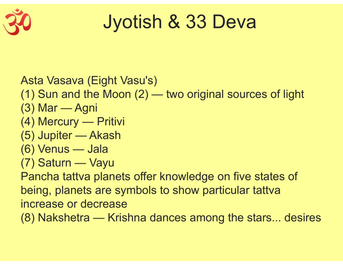

def slides1(
n
):
def slides1(
n
):
Class Structure & Logistics: - All webinars will be recorded and available within 24 hours for those who can’t attend live - Students get 2 years access to course materials (1 year of active study + 1 additional year) - Two live webinars per month (1 hour each) with mentors to summarize lessons, answer questions, and provide examples - Telegram group open for daily questions starting immediately - Private emails available for personal queries
Guru Mantra Practice: - Each class begins with “Om Guruve Namaha” repeated 12 times - Thursdays are preferred - Idea is placing Guru on lagna - This places Guru in each of the 12 rashis/houses symbolically - Ensures blessings for proper learning and understanding
Parampara Mantra (Main Practice): - The mantra is: Hare Rama Krishna (Janaka Shadakshari Mantra - 6 syllables) - Comes from Janaka Rishi, passed through Shri Achyutananda tradition - Daily practice: First thing upon waking, before feet touch ground - Recommended: 3 rounds of 108 repetitions (324 total) - Can be done mentally or with mala/finger counting - Maintains satva, continuous learning connection, and parampara flow
Study Recommendations: - Keep a special notebook as a Sanskrit dictionary for terminology - Keep a separate notebook for all mantras (write mantras in red pen - blessing of Ganesha) - Study preparatory lessons (Arambha) before official course starts in January - Complete homework for self-testing (not graded, but highly encouraged)
Software & Tools: - Recommended: Jagannatha Hora (free) or Shri Jyoti Star (paid) - iPhone app: “Jyotish” (though no perfect mobile solution exists yet)
Course Philosophy: - Self-paced online course based on Pandit Sanjay Rath’s live teachings - Focus on building solid foundations slowly and thoroughly (Saturn/Parashara energy) - Knowledge grows in depth and breadth over time - Students learn from each other’s questions
These represent the five tattvas and are worshipped in order:
Important: Any one of these five can lead to moksha if worshipped properly.
Setup: - Draw Swastika mandala with red powder/paste - Place Ganesha picture at eye level (looking slightly up = sattvic) - Light ghee lamp (represents your home - keep it clean and personal) - Face East or Northeast (or strongest direction in Ashtakavarga of Sun)
Mantra Selection: - Use one of 12 Ganesha names based on YOUR LAGNA (from Sri Narada’s list) - Example: Sagittarius Lagna = “Om Soham balachandraya svaha”
Practice: - Minimum: 108 times daily for 1 year - Rigorous: 15 malas daily (22 malas on Chaturthi) - Start on Chaturthi (Ganesha’s tithi) - Keep pen and paper near Ganesha during sadhana (use that pen for Jyotish notes later)
Purpose: Strengthens Lagna, Jupiter, and Mercury → supports learning and Guru-Shishya connection
Preparation: 1. Recite Shanti Mantra (from Rigveda) 2. Bija Pranayama (10 times): done with Pranayama - Inhale: “Om” - Hold: “Hreem” - Exhale: “Shraum” - Use both nostrils
Main Mantra: check slide
Purpose: - Connected to Mangala (Mars) - gives strength (satva) - Removes the 6 Ripus (enemies): Moha, Kama, Lobha, Matsarya, Krodha, Mada - Purifies luminaries, nakshatras, and agni - Strengthens mind for learning negative karmas in Jyotish
Purpose: Cleanses first three chakras (Muladhara, Swadhisthana, Manipura) related to basic instincts and manifested universe
Mala/Rosary: - Rudraksha recommended for Ganesha - 54 beads preferred (108 also fine) - Don’t touch with index finger (tarjani) - Once dedicated to sadhana, don’t use for other purposes
Diet: Vegetarian recommended but not mandatory for these sadhanas
Timing: - Parampara Mantra (Hare Rama Krishna): First thing upon waking - Other sadhanas: After bath, in the morning
Direction: East or Northeast best (or use Ashtakavarga of Sun for personal direction)
Would you like me to clarify any specific aspect of these practices?
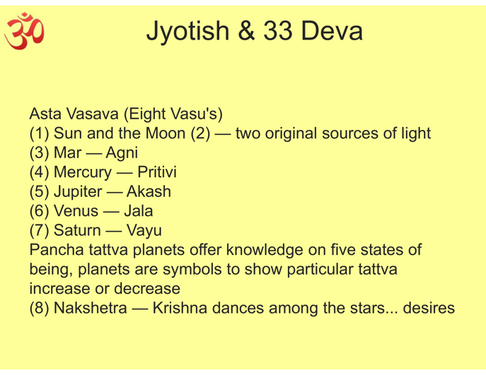
Telegram Group Usage: - Follow the syllabus/modules systematically - Keep questions focused on current module being studied - Ask intentional, specific questions (not open-ended “tell us more”) - Telegram is just a tool - take your own notes as primary resource - Mentors monitor discussions and will intervene if needed
Learning Approach: - Self-paced online course with mentor support - Guruji’s teaching method: Start with the NAME → meaning → application - Not spoon-feeding - some questions left for self-research - Learn from each other’s questions and discussions
Materials: - Adobe Flash issue being resolved - patience requested - All webinars recorded on private YouTube channel (permanent access) - 2-year access to PJC Year 1 materials (extendable)
Jyotish = Study of 33 Devas (not just planets/signs)
Rashis vs Bhavas: - Rashis = Material resources, physical quantities (“heap”) - Bhavas = Our thoughts/perceptions about life aspects
Important Axes: - 1st-7th: Birth-Death, Me-Others (horizontal, eye-level) - 4th-10th: Midnight-Noon, Lowest-Highest point (vertical)
Three Material Worlds: - Bhuloka - Earth (where we are) - Bhuvarloka - Solar system (Sun, planets) - Svargaloka - Sky (nakshatras, constellations)

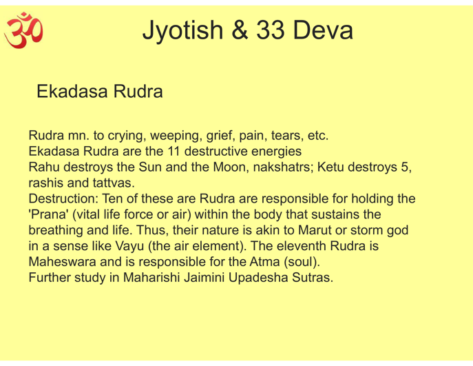


Pancha = Five, Anga = Limbs
The five fundamental divisions of time that form the foundation of any horoscope. Panchanga must be examined before looking at planetary positions, as it shows the quality of time for that birth.
Connection: Agni (fire), energy levels, physical health
Calculation: Sunrise to next sunrise
Seven Varas: Ravivara (Sunday), Somavara (Monday), Mangalavara (Tuesday), Buddhavara (Wednesday), Guruvara (Thursday), Shukravara (Friday), Shanivara (Saturday)
Analysis: - Check Varesha (lord of the day) placement from Lagna - Also check Varesha placement from Surya
Example Given: Franklin D. Roosevelt - Born Monday (Varesha = Moon) - Moon in 10th house conjunct Mars - Moon has zero Digbala (directional strength) in 10th - Moon-Mars = Gandanta (fire-water conflict) - Moon in 6th from Sun (enemy position) - Result: Polio (health issues related to movement on 4th-10th axis)
Connection: Jala Tatva, relationships, emotional content, interactions
Calculation: Sun-Moon relationship; 1 tithi = 12 degrees of zodiac
30 Tithis total: 15 in Krishna Paksha (waning), 15 in Shukla Paksha (waxing)
Eight Lords: Surya, Chandra, Mangala, Budha, Guru, Shukra, Shani, Rahu (Ketu has no lordship)
Analysis: Check Tithi lord placement from 4th house
Rikta Tithis (4th, 9th, 14th) - Most problematic: - Too much emotion, self-centered - Chaturthi - Ganesha (deity) - Navami - Durga (deity) - Chaturdashi - Shiva (deity)
Other Doshas: - Ekadashi (11th) - Addiction/anger issues (Mars/Agni) → fasting advised - Trayodashi (13th) - Wealth problems - Krishna Chaturdashi & Shukla Pratipada - Serious relationship issues (related to Soma’s sin with Tara)
Example Given: Marilyn Monroe - Tithi lord = Venus - Venus in 10th house in Aries (enemy sign) - Zero Digbala - Had relationships but they were problematic
Eight directions where grahas have full potential:
Plus: Upward (Ketu/Ananta - Moksha), Downward (Lagna/Brahma - Rebirth)
Shows which grahas block each direction:
Key Point: These are pairs that create either debate (Sattvic) or war (Tamasic)
Would you like me to clarify any specific aspect of Panchanga?
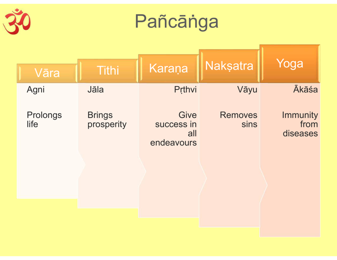
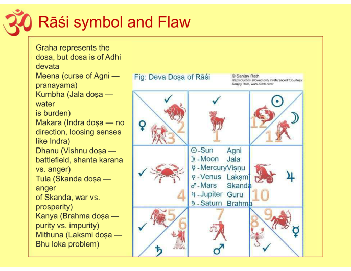


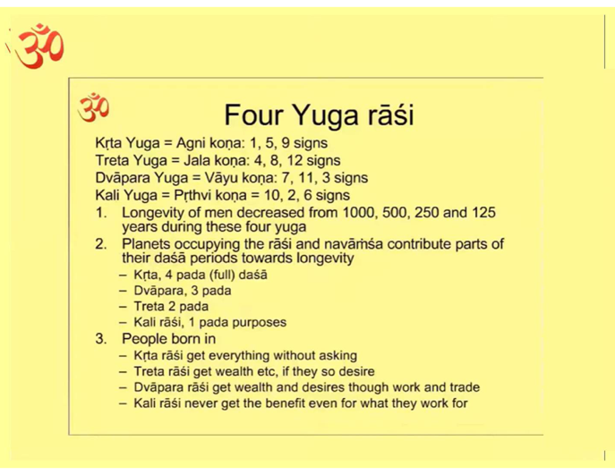


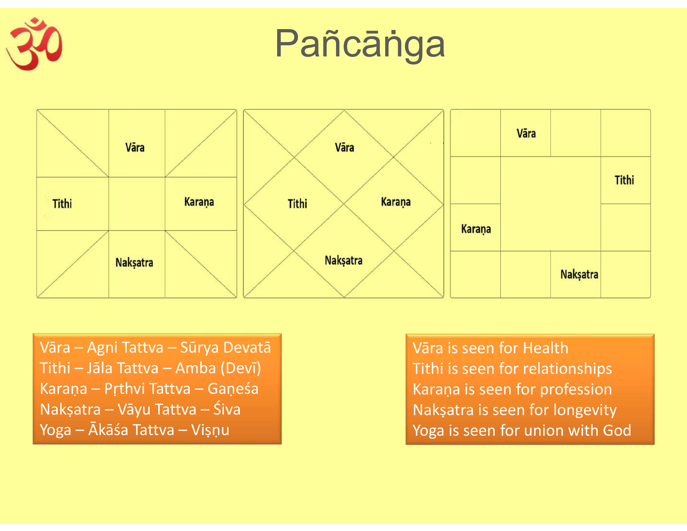


Learning Process: - Jyotish learning is spiral - same topics revisited from different angles/levels - Currently using “microscope” approach (detailed) vs “telescope” (broad picture from Aramba) - Learning Jyotish is like performing Brahma Yagya - devas work on you as you learn - Don’t fear Panchanga doshas you discover - you’re only seeing small details, not full picture
Important Clarifications: - Do NOT worship Sanjay Rath or put his picture on altar - He is Shiksha Guru (5th house - teacher of subject) - NOT Diksha Guru (9th house - spiritual guide who takes responsibility for soul)
Names that differ from popular usage: - Mesha (Aries) - Ram - Vrishabha/Vrisha (Taurus) - Bull - Mithuna (Gemini) - Couple - Karkata (Cancer) - Crab - Simha (Leo) - Lion - Kumari (Virgo) - Young virgin girl (not just Kanya) - Tula (Libra) - Scale/Balance - Ali (Scorpio) - NOT Vrishchika; means blessing, bridge, or exalted (refers to semen storage) - Dhanu (Sagittarius) - Bow/Archer - Makara/Nakra (Capricorn) - Reversal of hell (karma determines direction) - Kumbha (Aquarius) - Pot/Water bearer - Meena (Pisces) - Fish
Key Principle: Rashis with unclear/multiple symbols carry Brahma Dosha
Clear, single-element symbols: 1. Mesha - Ram (clear) 2. Vrishabha - Bull (clear) 3. Karkata - Crab (clear) 4. Simha - Lion (clear) 5. Vrishchika/Ali - Scorpion (clear)
| Rashi | Planet Showing Dosha | Devata Angered | Nature of Dosha |
|---|---|---|---|
| Meena | Surya (Sun) | Agni | Fish cursed to never see sunlight; Remedy: Pranayama |
| Kumbha | Chandra (Moon) | Jala | Water gets spoiled/fermented in pot; emotions problematic |
| Makara | Guru (Jupiter) | Indra | Loss of senses/direction; alcohol issues |
| Dhanu | Budha (Mercury) | Vishnu | Battlefield; right vs wrong obsession; righteous anger |
| Tula | Mangala (Mars) | Skanda | War vs prosperity conflict; “all fair in love and war” |
| Kanya | Shani (Saturn) | Brahma | Purity vs impurity; obsession with cleanliness |
| Mithuna | Shukra (Venus) | Lakshmi | Boy + girl + club + instrument; dominant Bhuloka dosha; relationship/emotion issues |
Usage: Check dosha planet in chart when analyzing that ascendant - may not be as helpful as expected
Natural zodiac = God’s body template: 1. Mesha - Head 2. Vrishabha - Face & neck 3. Mithuna - Arms & shoulders 4. Karkata - Chest, heart, breast 5. Simha - Stomach & liver 6. Kanya - Intestines, navel 7. Tula - Below navel, kidneys 8. Vrishchika - Genitalia (HORIZONTAL - Ketu reverses) 9. Dhanu - Thighs 10. Makara - Knees 11. Kumbha - Calves 12. Meena - Feet (HORIZONTAL - Ketu reverses)
Exception: Ketu-ruled parts are horizontal, not vertical
| Type | Rashis | Guna | Energy | Devata |
|---|---|---|---|---|
| Chara (Movable) | Mesha, Karkata, Tula, Makara | Rajas | Excess energy, pioneers, creative | Brahma |
| Sthira (Fixed) | Vrishabha, Simha, Vrishchika, Kumbha | Tamas | Inert, stable, sustaining | Rudra |
| Dwi (Dual) | Mithuna, Kanya, Dhanu, Meena | Sattva | Balanced between mobile & fixed | Vishnu |
Rashi lord’s guna adds layer to rashi: - Sattva planets: Surya, Chandra, Guru - Rajas planets: Budha, Shukra - Tamas planets: Mangala, Shani
Example: Mesha = Chara (Rajas by creation) + Mars lord (Tamas) = High energy but can be lazy/uninformed
How to Read: Check which guna dominates based on lord’s strength in chart
Mesha, Mithuna, Simha, Tula, Dhanu, Kumbha - Aggressive, assertive, extroverted, outspoken - Make own decisions, less likely to seek advice
Vrishabha, Karkata, Kanya, Vrishchika, Makara, Meena - Passive, introverted, sustaining - More likely to seek guidance/advice
For Child Gender (Saptamsha only): - Mithuna & Karkata SWAP - Kumbha & Meena SWAP
Usage: Shows how much support/ease person has in getting knowledge, solutions
From Sun & Moon (King & Queen): 1. Sun & Moon - Leo & Cancer (King & Queen’s quarters) 2. Budha - Gemini & Virgo (Prince/Princess - next to parents) 3. Shukra - Taurus & Libra (Court ladies) 4. Mangala - Aries & Scorpio (Guards/Knights; Scorpio also has spies via Ketu) 5. Guru - Sagittarius & Pisces (Advisors/Priests/Ministers) 6. Shani - Capricorn & Aquarius (Workers/Commoners/Labor)
Also shows: Speed of planets from Earth (geocentric view)
Fingers = 12 Rashis (4 fingers × 3 parts = 12)
Dual lagnas control through: - Budha lagnas (Mithuna/Kanya) - Control via information/details - Guru lagnas (Dhanu/Meena) - Control via knowledge/belief systems
Next Steps: This foundational knowledge will be layered with grahas (planets), bhavas (houses), and yogas in upcoming lessons.
Would you like me to clarify any specific concept?
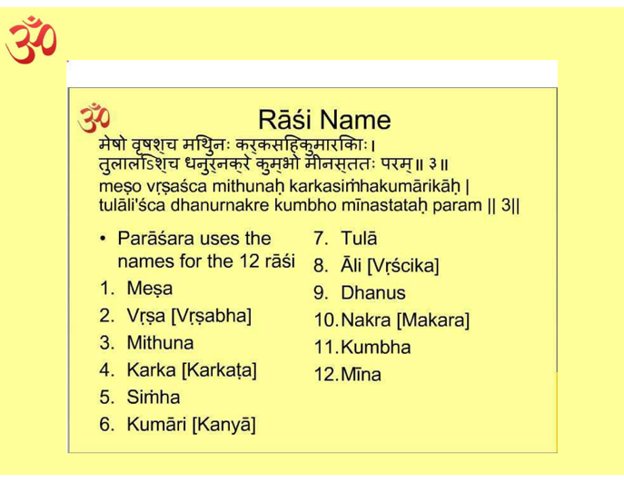


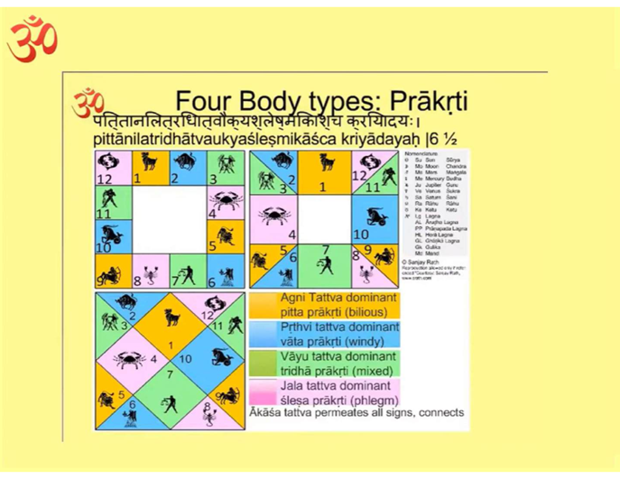

Core Principle: Sanskrit consonants have numerical values (0-9)
Key Rules: - Vowels = 0 (only counted if name starts with vowel) - Use pronunciation, not spelling - Drop incomplete consonants (without following vowel) - Ra/La rule: If consonants joined with R or L, keep only initial consonant - Reverse the number after calculation - Divide by 12 to get remainder = Rashi
Example: Vivekananda - Consonants: Va-Ve-Ka-Na-Na-Da - Values: 4-4-1-0-8 - Number: 44108 → Reversed: 80144 - After dividing by 12 → Remainder = 4 (karka rahsi)
Usage: - Rashi (sign) = interaction with people - House number = inner manifestation
Horizon: Where earth and sky meet (observer-dependent)
Key Points: - Udaya Lagna = Eastern horizon (rising point) - Asta Lagna = Western horizon (setting point) - 180° from Udaya - MC (Mid-Heaven/Zenith) = 90° above observer - Ecliptic = Horizontal plane between Sun & Earth
Directional Degrees: - North = 0°/360° - East = 90° - South = 180° - West = 270°
Method: Take Lagna degree ± 15 degrees = 30° house span
Example: Swami Vivekananda (26° Dhanu Lagna) - 1st House = 11° Dhanu to 11° Makara - 2nd House = 11° Makara to 11° Kumbha - And so on…
Result: Planets may shift houses if they’re within 15° of cusp
In Vivekananda’s chart: - Mars shifted from 5th → 4th house - Venus shifted from 2nd → 1st house - Jupiter shifted to 10th house
Significance: When many planets shift = major life transformations
Starting Point: Uses Bhava Lagna (special lagna, moves 2 hours/sign)
Same process: Bhava Lagna degree ± 15°
Key Difference: - Bhava Chakra starts from Udaya Lagna - Bhava Chalit starts from Bhava Lagna (calculated separately)
Setup: 1. Draw Bhava Chalit Chakra 2. Place 6 AM where Sun is located 3. Place 6 PM in 7th house from Sun 4. Each house = 2-hour period
Planet Activities & Best Times:
| Planet | Activity | Best Time |
|---|---|---|
| Surya | Spiritual practice, energy level | Sun’s house + aspects |
| Chandra | Eating/food | Moon’s house + aspects |
| Mangala | Exercise, physical strength | Mars house + aspects (4th, 7th, 8th from itself) |
| Budha | Reading, learning, playing | Mercury’s house + aspects |
| Guru | Big decisions, digestion, conclusions | Jupiter’s house + aspects |
| Shukra | Relationships, indulgence | Venus’s house + aspects |
| Shani | Resting (15 min minimum) | Saturn’s house + aspects |
| Rahu | NO activity - meditation time | Rahu’s house + aspects |
| Ketu | Avoid activities - meditation | Ketu’s house + aspects |
Important Notes: - Check planet’s aspects (5th, 7th, 9th, 2nd from itself for Rahu) - When planets conjunct = divide time between both activities - Each house = 2 hours, but find at least 15 min for that activity - Movement is anti-zodiacal (Sun moves through houses, not signs)
Practice tip: Use each chart exclusively for 1-3 months to master all types
Homework: Draw your Bhava Chalit Chakra and create your biological clock timing table!
Would you like clarification on any specific concept?
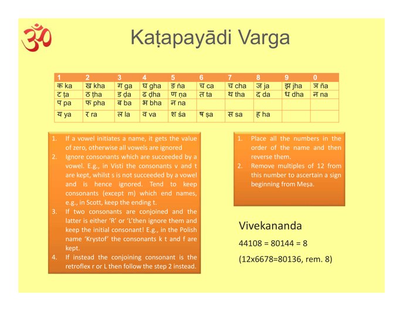
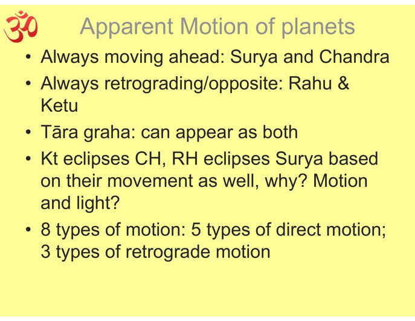

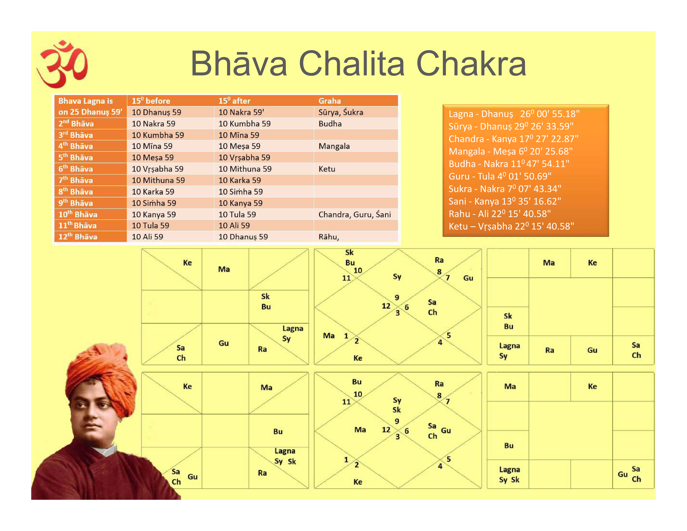

Parashara’s Definition (Chapter 3, Shloka 1): Heavenly bodies classified by: 1. Visibility (can we see them?) 2. Movement (do they move?)
KEY POINT: Grahas have the inherent nature to eclipse the mind - this is their fundamental characteristic.
Question addressed: If we only count visible bodies, why include Rahu/Ketu?
Answer: - They are mathematical points (nodes of the Moon) - They create inverse light/shadow (like closing eyes after seeing sun = black circle) - They represent extremes of the mind: - Rahu = Fully material, maximum desire, wants to consume everything - Ketu = Fully detached, wants nothing, renunciation
Manifestations: - Rahu: Foreigners, different cultures, borders, geographical boundaries, fermentation, alcohol, medicine - Ketu: Outcasts, monks/nuns, spiritual people, those who renounce society - Example given: Man who moved to attic for years, refused all contact = clear Ketu influence
Nature: Planet behaves like Rahu/Ketu
Characteristics: - Not progressing - standing still or pacing - Unfulfilled desire/karma with that planet - Unpredictable, odd behavior - Cannot be trusted (unexpected turns) - May not give results (especially in Prashna/horary)
Strength Implications: - Retrograde = Extremely strong (like nodes) - Has Cheshtabala (directional strength) - Can cause highest grahana (eclipse power)
Prashna (Horary) Rules: - If significator is vakri → Won’t happen (or needs 3 attempts) - 3x multiplier: 3x more effort, 3 attempts, or 3 blessings/children
5 Direct Motions: 1-5. (Various speeds of forward movement)
3 Retrograde Motions: 1. Vakra - Standard retrograde 2. Anu-vakra - Slowing down in retrograde 3. Kutila - Stationary (about to change direction)
IMPORTANT: Kutila applies to both transitions: - Direct → Retrograde - Retrograde → Direct
Outer Planets (Mars, Jupiter, Saturn):
Exercise given: Draw blank chart, place Jupiter on Lagna
Inner Planets (Mercury, Venus): - Requires deep astronomical study (Surya Siddhanta) - Not explained in basic course
Jupiter: Sun in 5th from Jupiter → Jupiter stationary (velocity = 7, very low)
Saturn: Opposite Sun (7th house) → Highest retrograde (velocity = -223%)
Velocity Interpretation: - Minus (-) = Retrograde - Close to 0 = Stationary - High positive = Fast direct motion - High negative = Fast retrograde (double speed)
Note: No exact ranges given for motion types - must observe velocity values
NO! Planet stays where it is.
Example: Retrograde boyfriend still behaves oddly, but he’s still your boyfriend in the same place.
What changes: - Planet gets nature of nodes - Can cancel exaltation/debilitation (taught in next lesson) - Creates yogas from its actual position
Question: Why do grahas show different colors in nakshatra vs rashi?
Answer - The Three Lokas:
How Grahas Work: - Grahas move through nakshatras (truth) - Cast shadow on both nakshatras AND rashis - Bind nakshatra significations with rashi significations
Nakshatras = Your thoughts, emotions, ideas (lunar, night concept) - Where graha is = your specific lens of thinking/feeling
Rashis = Material resources, physical things (everything you can see/touch) - Where graha is = where you experience grahana materially
Example: Two planets in same rashi but different nakshatras: - Working on same project (rashi) - But have different ideas/emotions about it (nakshatra)
Direction of influence works both ways: 1. Mental → Material: Thoughts manifest as actions 2. Material → Mental: Events cause us to think certain thoughts
Not explained in detail (covered in separate lesson), but:
Birth Time Indicators: - Sun in 1st (Udaya Lagna) = Sunrise birth - Sun in 7th (Asta Lagna) = Sunset birth - Sun in 10th (Akasha Lagna) = Midday birth (~noon) - Sun in 4th (Jala Lagna) = Midnight birth
Sam-yoga = ALL ways planets can combine (with planets, nakshatras, rashis)
Sam-bandha = Important combinations that have great impact - This is the term we use most - 4 specific types (one being conjunction/yuti)
Sam-yoga Sphuta = Mathematical meeting point of two planets - Calculated even if not in same rashi - Shows where yoga will manifest
Later: Yoga Sphuta can combine ANY two points (e.g., Lagna lord + 7th lord)
Bhavishya Yoga = Yoga that will happen in future - Planets moving toward conjunction
Atita/Veeta Yoga = Yoga that happened in past - Planets moving apart after conjunction
Why calculate Atita Yoga Sphuta? - See where past yoga had impact - Useful for research/deep study of charts - Example: Two people with Chandra-Ketu in 11th - did it happen already or will it happen?
If yoga rashi not visible from yoga: - Don’t use seasons (mentioned but corrected) - Use Samukha-rashi (opposite/complementary signs) - Taught in Rashi Drishti module
Not taught in detail yet - comes in Year 3
Next Topics: Exaltation, debilitation, planetary relationships, yogas in detail
Would you like me to clarify any specific concept from this lesson?
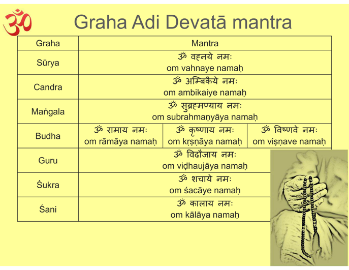
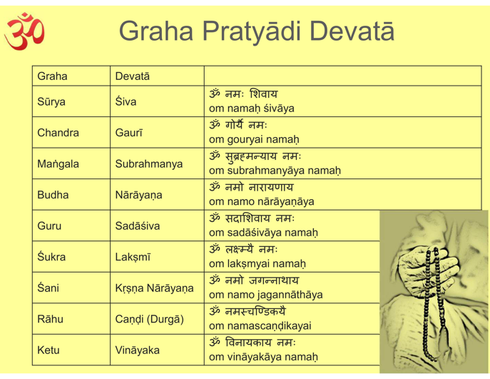


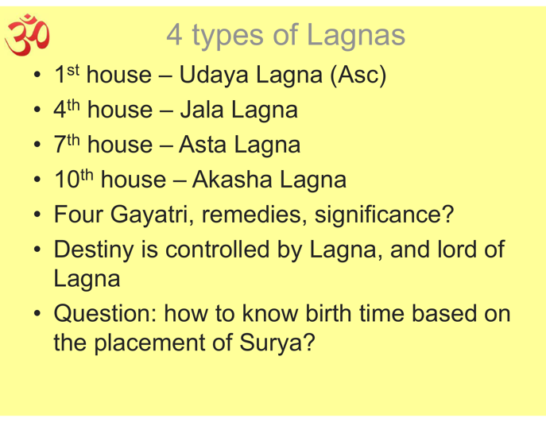
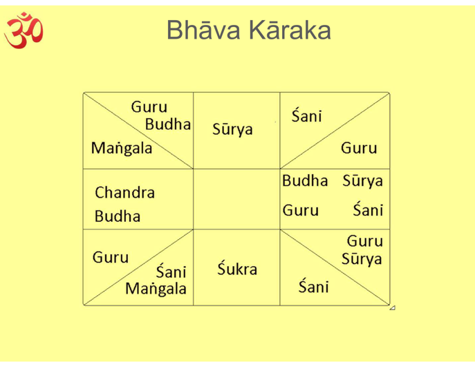

Purpose: Worship when starting something new (job, family, project, book)
| Graha | Adi Devata | Purpose |
|---|---|---|
| Surya | Vahni (Agni) | Awakens purpose, takes prayers to devas |
| Chandra | Ambika | |
| Mangala | Subramanya | Auspicious form (NOT Skanda/warrior form) |
| Budha | Rama (0-10°), Krishna (10-20°), Vishnu (20-30°) | Choose based on degree |
| Guru | ||
| Shukra | ||
| Shani |
Key Point: Adi devatas are for awakening/starting activities.
Purpose: Control, sustain, protect, remove obstacles, complete karmas
| Graha | Pratiyadi Devata | Nature |
|---|---|---|
| Surya | Shiva | Manifested form (with form) |
| Chandra | Gauri | |
| Mangala | Subramanya | Same as Adi devata |
| Budha | Narayana | Unmanifested, above avatars |
| Guru | Sadashiva | Unmanifested Shiva (no form) |
| Shukra | Lakshmi | Sustains relationships, love |
| Shani | Krishna Narayana (Jagannath) | Relieves sins, without form |
| Rahu | Chandi (Durga) | |
| Ketu | Ganesha |
Key Difference: - Adi devata = Start things - Pratiyadi devata = Sustain, protect, correct, complete
When to Use: Based on dasha and current need (not all at once!)
Kendras represent Vishnu’s sustaining power
| Lagna | Sun Position | Time | Represents | Bija (Vaishnava) | Bija (Shaiva) |
|---|---|---|---|---|---|
| Udaya (1st) | Sunrise | ~6 AM | Life beginning, Buddhi (intelligence) | Hare | Om |
| Asta (7th) | Sunset | ~6 PM | Moon rises, social life, Shuddhi (cleansing) | Rama | Hreem |
| Jala (4th) | Midnight | ~12 AM | Moon’s full potential, rest, forgiveness | Krishna | Kleem |
| Akasha/Svarga (10th) | Midday | ~12 PM | Sun’s full potential, Siddhi (accomplishment), karma burning | Hare | Shreem |
SAMADHI = Balance of all 4: Buddhi + Shuddhi + Siddhi + Riti
From Akasha Lagna (10th), count 4th, 5th, 9th, 12th houses. These become from your Lagna: 1st, 2nd, 6th, 9th
Venus & Mercury signs from Akasha = 3rd, 4th, 11th, 12th from Lagna
Mars & Saturn signs from Akasha = 5th, 7th, 8th, 10th from Lagna
Two Devatas: 1. Kubera = Wealth 2. Vishnu = Purity/Enlightenment
Choice: Do we choose wealth or enlightenment?
Reversal Principle: - 12th from Sun = What we GAIN (nature loses, we gain) - 2nd from Sun = What we LOSE (we give back to nature)
SATTVA: Surya, Chandra, Guru (sustenance, protection) ↓ RAHU (border - attacks sattva) ↓ RAJAS: Budha (5), Shukra (6) ↓ KETU (border) ↓ TAMAS: Mangala, Shani
Numbers: Sy=1, Ch=2, Gu=3, Ra=4, Bu=5, Sk=6, Ke=7, Sa=8, Ma=9
| Type | Nature | Grahas | Character |
|---|---|---|---|
| Uttama | Purest sattva | Saumya & Punya (Moon, Guru, Venus, Mercury) | Forgiveness, control, calm, humble |
| Madhyama | Kshatriya, harsh but auspicious | Surya only | Protects dharma, corrects (like prison) |
| Udashina | Sad, depressed, greedy | Venus, Mercury (rajas) | Never satisfied, sorrowful |
| Adhama | Evil, harsh | Mars, Saturn (tamas) | Lies, lazy, violent |
Problems to Develop: - Tamas (Rakshasa) = Empathy (Daya) - Rajas (Manushya) = Donation (Dana) - Sattva (Deva) = Control senses
Goal: Become Gunatita (beyond gunas)
Relationship: Panchamakaras cause Shadripus
| House | Karaka(s) | What They Show |
|---|---|---|
| 1st | Surya | Self |
| 2nd | Guru (wealth), Budha (speech) | |
| 3rd | Mangala | Courage, siblings |
| 4th | Chandra (mother), Mangala (property) | |
| 5th | Guru | Children, intelligence |
| 6th | Shani, Mangala | Enemies, disease |
| 7th | Shukra | Spouse |
| 8th | Shani | Longevity |
| 9th | Surya, Guru | Father, dharma |
| 10th | Budha (job ability), Surya (need), Shani (effort), Guru (fruits) | Career |
| 11th | Guru | Gains |
| 12th | Shani | Loss, expenses |
Technique: Place karaka as lagna to see specific relationships - E.g., 4th from Guru = knowledge from mother - 5th from Budha = communication with children
| Sign | Aditya | Sign | Aditya |
|---|---|---|---|
| Mesha | Dhata | Tula | Indra |
| Vrishabha | Aryaman | Vrishchika | (Ali) |
| Mithuna | Mitra | Dhanu | Bhaga |
| Karkata | Varuna | Makara | Bhaga |
| Simha | Indra | Kumbha | |
| Kanya | Vivasvan | Meena | Vishnu |
** above table is incorrect please check the slides **
Two Adityas matter: 1. Lagna Aditya = Defines YOU, intellectual functioning (personal) 2. Sun sign Aditya = What you do to the WORLD (external)
House where Sun placed = Area blessed by that Aditya
Key Point: Look at placement of dosha-carrying planet
Example: Mithuna lagna (Lakshmi dosha via Shukra) - Where is Venus placed? = Problematic area - Lordship also matters - Must check if planet is afflicted for bigger problems
Not all doom! Even afflicted placements in upachaya houses can give benefits.
Questions to explore: - Which dasha are you in now? - What specific area needs remedy? - Want to understand your chart’s specific dosha?
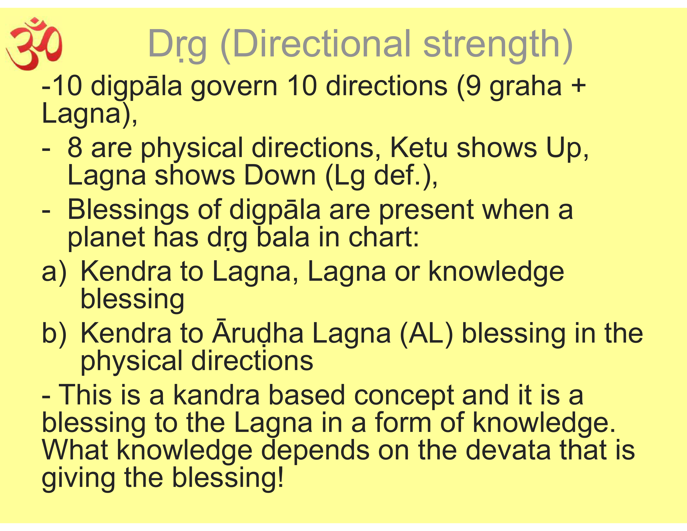
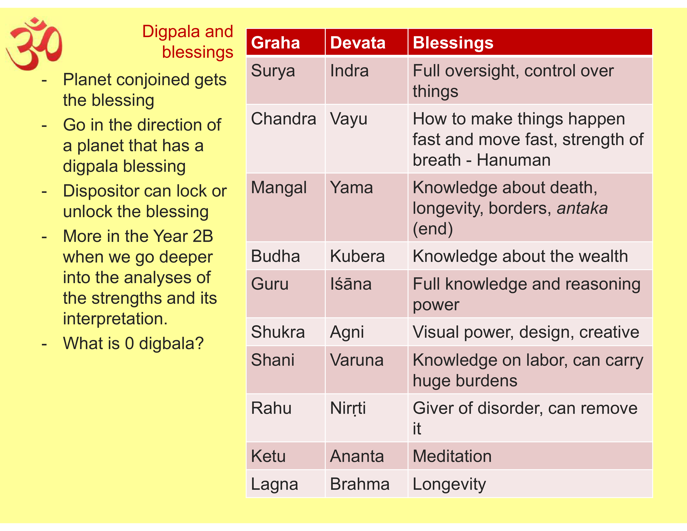
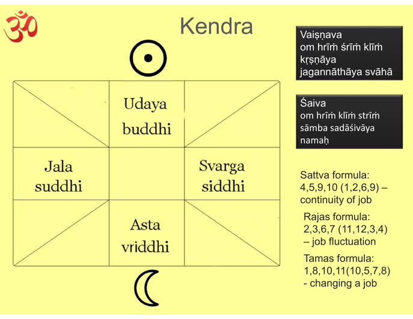


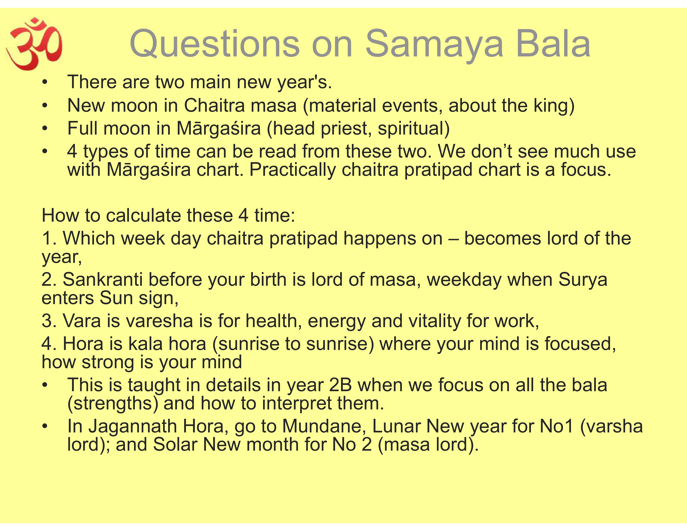


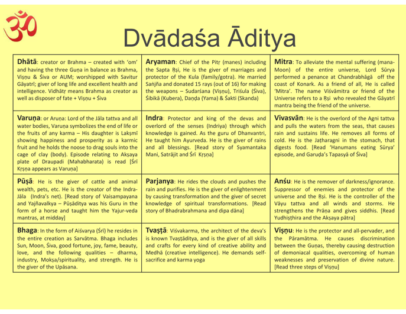
What it is: Planets gain special strength when placed in specific houses (kendras) from the lagna. Behind each planet in dig bala is a devata (deity) blessing that position.
Key Principle: Dig bala is a kendra-based concept - planets gain this strength in the 1st, 4th, 7th, or 10th houses from lagna.
Each of the 9 grahas plus lagna has a specific dig bala position: - Surya (10th house) - Indra’s blessing: oversight, control, statesmanship - Chandra (4th house) - Vayu’s blessing: speed, pranayama knowledge - Mangal (10th house) - Yama’s blessing: knowledge of borders, longevity, dasha - Budha (1st house) - Kubera’s blessing: knowledge of wealth - Guru (1st house) - Ishana’s blessing: full knowledge, reasoning (viveka) - Shukra (4th house) - Agni’s blessing: vision, ability to envision - Shani (7th house) - Varuna’s blessing: carrying burdens, labor knowledge - Rahu (7th house) - Niriti’s blessing: understanding chaos and its removal - Ketu (10th house) - Ananta’s blessing: meditation, spiritual introspection - Lagna (vargottama) - Mritunjaya blessing: longevity
From Lagna: The devata gives knowledge to the person - this is a blessing that can be strengthened through remedies
From Arudha Lagna: Shows the physical direction where blessings manifest (useful for relocation advice)
Conjunctions: When a dig bala planet conjoins another planet, it spills the blessing onto that planet (like an expensive house raising the value of a neighboring cheap house)
Dispositor is Key: The dispositor can lock or unlock the blessing - check its condition first. If doing remedies, worship the dispositor first, then the dig bala planet.
Zero Dig Bala: Opposite placement shows lack of knowledge in houses ruled by that planet - the person may be capable but unable to apply themselves in those areas
Independent of Sign: Dig bala works regardless of whether the planet is exalted, debilitated, or in own sign - these are separate layers of analysis
Abraham Lincoln: Budha (lagna lord) in 1st house conjunct Surya - Kubera’s wealth blessing manifested through Surya’s statesmanship. Rahu-Mangal in 9th activated through war/law-making but ultimately led to his death (Rahu in marana karaka sthana defeated by Mangal).
Would you like me to clarify any specific aspect of dig bala?

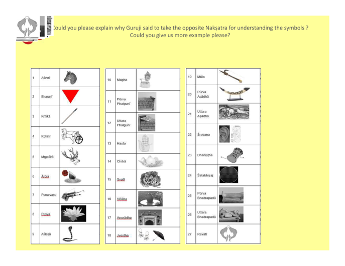
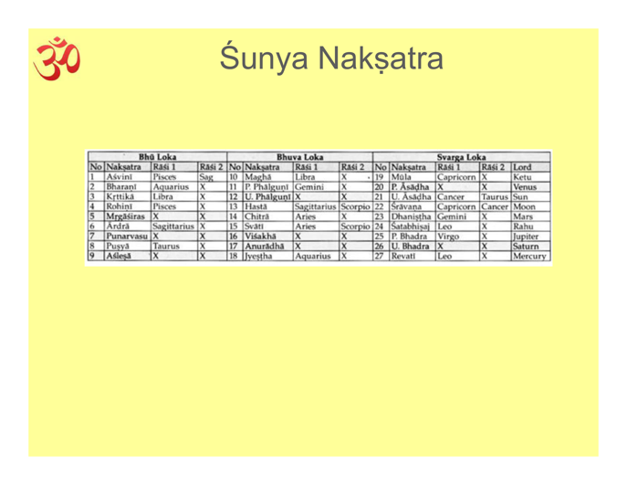


I’ll summarize this Vedic astrology lesson on Nakshatras. This is quite extensive, so let me break it into key sections:
The lord of your Janma Nakshatra shows your mental attitude:
Would you like me to elaborate on any specific section?

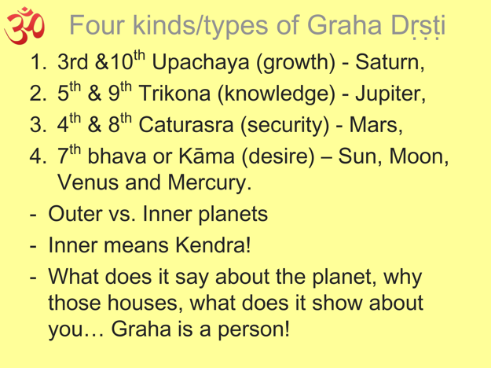

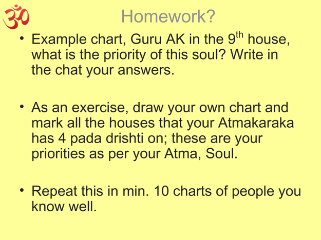
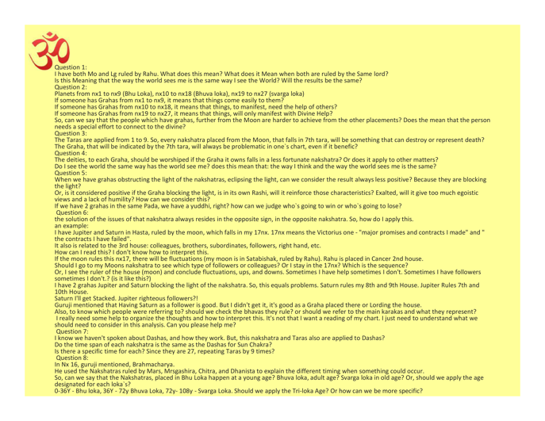


I’ll create a comprehensive summary of this Vedic astrology lesson on Graha Drishti (planetary aspects). This is quite detailed, so let me break it into key sections:
Definition: Graha drishti is planetary aspect - the ability of planets (movable bodies) to influence other bodies from certain positions. It represents: - Expression of desire (temporary, activated during dashas or through mantras) - Ability to influence based on position - What the planet is viewing/becoming aware of - What the planet prioritizes
1. Outer Planets (have multiple aspects):
2. Inner Planets (Kendra planets):
3. Rahu - Kama Drishti: 2nd and 7th houses - Represents desire to possess, enjoy, consume
4. Ketu: Has no graha drishti (withdrawn nature)
Using Raksha Drishti (4th & 8th from lords):
Using Kriya Drishti (3rd & 10th - Saturn’s aspects): - 3rd = new work/initiatives - 10th = old work/unresolved issues
Using Jnana Drishti (5th & 9th - Jupiter’s aspects): - 5th = new knowledge/skills to learn - 9th = past knowledge/education/baggage - Afflicted 9th can mean stuck in perpetual education
Can analyze from three perspectives: 1. Bhava (house) - general/Kalapurusha chart 2. Bhava Lord - individual chart specifics 3. Karaka - natural significator
Permanent Nature: Shown by Atmakaraka’s purna drishti - Indicates soul’s highest priorities - Example: Jupiter as AK in 9th house prioritizes knowledge of 1st house (self, health, birth purpose) and 5th house (children, future, mantras)
Temporal Nature: Shown by Mahadasha lord’s purna drishti - Current life priorities during that period
Would you like me to clarify any specific aspect of this lesson, or shall we explore how to apply these concepts to a chart?


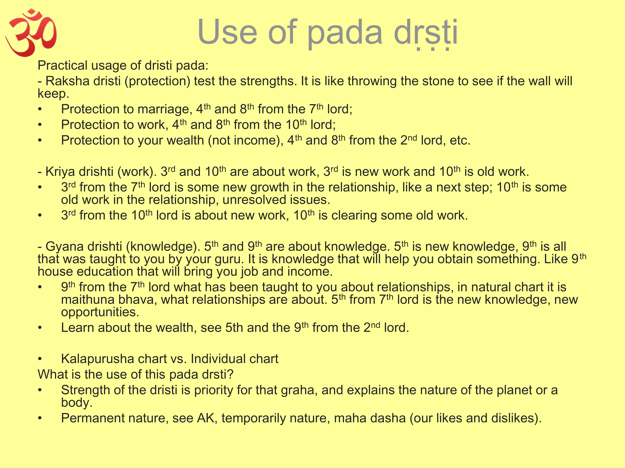

I’ll provide a comprehensive summary of this Vedic astrology lesson on Rashi Drishti (sign aspects). This is a detailed transcript, so I’ll break it into key sections:
Rashi Drishti is fundamentally different from Graha Drishti: - Graha Drishti = planetary desire to influence; changes with dashas/transits (temporary) - Rashi Drishti = permanent natural functioning; mutual sharing of information between signs; exists throughout time
Key example: Mars in Mesha and Guru in Vrishika have mutual rashi drishti (knowledge sharing), but only Mars has graha drishti on Guru (8th aspect), not vice versa.
Protection principle: Planets in abhimukha signs protect each other, especially the sign lord and exalted planet. Malefics in abhimukha can jeopardize sustenance.
Two types: - First Parshva (creation side) - Brahma tatva - Second Parshva (destruction side) - Rudra tatva (also called Badaka)
For Mesha: Simha (creation), Vrishika (sustenance/abhimukha), Kumbha (destruction/badaka)
The “destruction” parshva - represents overconfidence where we think we know but don’t.
Badaka rules: - Chara (movable) signs: 11th house is badaka - Sthira (fixed) signs: 9th house is badaka
- Dvisvabhava (dual) signs: 7th house is badaka
The badaka moves in 3-step pattern opposite to Vishnu’s movement through signs.
Signs 180° apart represent the same quality with different manifestations - two sides of one coin. You can only choose one side: - Mesha-Vrishika (Mars): Warrior vs spiritual/occult - Rishabha-Tula: Family establishment vs wandering - Mithuna-Dhanus: Worldly involvement vs sannyasa
When analyzing any rashi, examine four positions: 1. The rashi itself 2. Its creation source (first parshva) 3. Its sustenance (abhimukha) 4. Its destruction/obstacles (badaka)
Check both from: - Lagna (intellectual ability) - Lagna lord placement (practical application ability)
Srila Prabhupada (Dhanus lagna): - Abhimukha = Mithuna (7th house challenge: samsara vs sannyasa) – ** this is incorrec i think it is samukha rashi ** - From lagna lord (Guru in 9th/Simha): Abhimukha is Makara (2nd) with exalted Shani - successfully faced challenge, established family then took sannyasa - Parshva knowledge: Meena (4th house purity/bhakti) - Applied through exalted Shani - uplifted drug users/hippies to vegetarianism and Krishna consciousness
Kurt Cobain (Simha lagna): - Abhimukha = Makara (6th) with Shani-Venus (desires/vices problem) - Knowledge source (Tula) lords over badaka - created own blockages - Fame he couldn’t handle, led to suicide
The transcript lists which planets protect which signs (lord + exalted planet for each).
Would you like me to elaborate on any specific section?
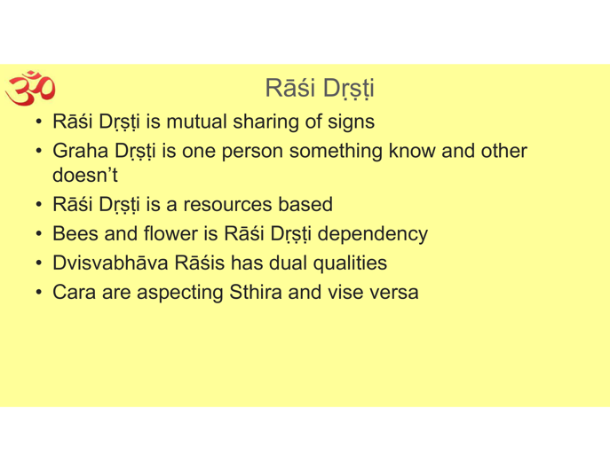


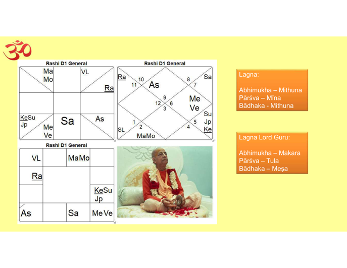


I’ll provide a comprehensive summary of this Jyotish (Vedic astrology) lesson on Bhavas (houses):
Bhava Definition - Bhavas are not static areas of life but dynamic states of mind, attitudes, sentiments, and experiences - They grow and expand based on knowledge and awareness - Three ways to define bhavas: Narayana (rashi-based), Bhava Chakra (degree-based), and Bhava Chalita Chakra
Bhava Names The 12 houses have specific Sanskrit names that reveal their significance: Lagna, Dhana, Sahaja, Sukha, Putra, Ari, Yuvati, Randhra, Dharma, Karma, Labha, Vyaya
Kendras (1st, 4th, 7th, 10th) - Vishnu/Moon concept - Most important houses - the four pillars of life - Visualized as a four-petal lotus - Only houses we have direct access to - 1st & 7th: High tide (high emotions) - birth/coming and going/journey - 4th & 10th: Low tide (rest/relaxation) - home and work - Planets in kendras cooperate and support each other
Konas (5th, 9th) - Lakshmi/Shiva concept - Resources and knowledge that sustain life - Represent prosperity and dharma - 5th house: Future, mantra, prayers, visualization, children - 9th house: Past, guru knowledge, father, lineage, dharma - When bhava lords are placed in konas, they show what you pray for or admire
Dusthanas (6th, 8th, 12th) - Shani/Saturn concept - Represent sorrow, sin, and karmic debts - Planets here have “taxes” to pay - 6th house: Weaknesses (shadripu), temptations, lifestyle choices, celibacy - FREE WILL - 8th house: Past sins (rina), karmic debts, unseen diseases - NO FREE WILL - 12th house: Losses, foreign residence, blame
Upachaya Houses (3rd, 6th, 10th, 11th) - Free will houses - Have potential to grow and develop - Lagna lord in 3rd/6th: Manta Yoga (extreme intelligence) - Lagna lord in 10th/11th: Siddha Yoga (huge achievements) - 3rd: Choice of weapon/expression - 6th: Dealing with enemies/temptations - 10th: Keeping promises, work - 11th: Gains - what you’re willing to accept/take
Trikona (3rd, 6th, 11th) - Brahma houses - Contribute to our creation - 3rd & 6th: Creation part - 11th: Delivery part - Related to Rahu (cause of birth) - 6th house: Body creation (with Brahma) - 12th house: Mind creation (with Saraswati)
Travel & Foreign Residence - 7th house: Journey and movement (not residence) - 10th house: Away from home - 12th house: Foreign residence/settlement - 3rd house: Short-term travel - 9th house: Freedom to travel (visa/permits)
Children - Male chart: 5th house for progeny - Female chart: 9th house for progeny, conception, pregnancy
Judgment of Bhavas - Benefic planets in a house bring happiness (sukha) - If bhava lord is in kendra/kona from lagna, that bhava is empowered - Example: 6th lord in kendras strengthens celibacy, can delay marriage
Lord Placement - From lagna: Shows our experience of that bhava - From the bhava itself: Shows resources available to that bhava - In kendra: God-given, accessible - In kona: Need to pray for it, seek knowledge - In dusthana: Sin/sorrow attached
The lesson emphasized understanding WHY classical texts say what they do, not just memorizing combinations.


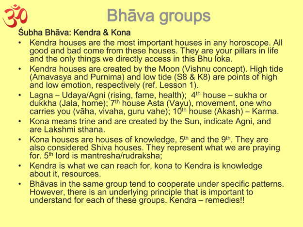


I’ll provide a comprehensive summary of this Vedic astrology lesson on Bhava lords (house lords). This is a detailed technical lecture, so I’ll organize it systematically.
The instructor emphasizes creating templates for understanding how bhava lords function, focusing on the first four house lords.
Key Principle: Lagnesha functions like Agni (fire) - similar to Mars and Surya, as they rule the 1st house in Kalpurusha.
The Burning/Digesting Effect: - Wherever Lagnesha sits, it “burns” or “digests” that house’s resources - Even Lagnesha in Lagna causes a burning/cleansing process before positive outcomes - Resources are taken from the house where Lagnesha sits and added to the 1st house
Houses from Lagnesha (Pacha Lagna):
Positive Houses (what we like/support): - Kendras (1st, 4th, 7th, 10th): Houses we can directly access, our pillars of life - Konas (5th, 9th): Knowledge and resources we can obtain - 3rd house: Parakrama - courage, spiritual potential, effort - 4th house (Mars aspect): Joy, security (but also Mars’s neecha - fragile, needs protection) - 7th house: How people feel when interacting with us; cooling effect - 8th house (Mars aspect): Desire to intervene; what we must resolve to rise - 10th house: Success, exalted state (Mars’s uchcha)
Negative Houses (Gupthanas - what we reject): - 6th, 8th, 12th from Lagnesha: Things we don’t like or want
Additional Layers: - 2nd house: Public/professional enjoyment (dhyana) - 12th house: Private life/intimacy (mining) - High tide houses (1st, 7th): High emotions, strong attachment - Low tide houses (4th, 10th): Rest, less emotional charge
Three Ganas from Lagnesha: - 6th house: Rakshasa gana - where we show no mercy; people may fear us - 8th house: Deva gana - enjoyment without control; addictions/obsessions - 12th house: Manushya gana - selfishness, hoarding tendencies
Key Principle: Shows our attitude toward wealth and what we consider valuable (not just money).
Important Houses from Dhanesha: - 3rd house: Social enterprise - efforts to gain wealth - 4th house: Attitude toward wealth (sharing vs. hoarding) - 5th house: Source of wealth - 6th house: Meetings/interactions needed to gain wealth - 7th house: Debts we must take - 9th house: Agreements/responsibilities for wealth - 11th house: Source of expenditure (opposite of 5th) - 12th house: Who controls the wealth (if afflicted, can lose everything)
Key Principle: Shows where we put effort and our Guru Padasha (spiritual path). Also relates to copulation/relationships.
Important Houses from Sahajayesha: - 3rd house: Object of efforts - where we gladly work hard - 4th house: Where we’re tired/impatient, don’t want effort - 5th house: Reasons for interaction/copulation - 7th house: Fulfillment of desires (especially sexual/relationship) - 9th house: What comes naturally/easily to us - 10th house: Source of partners (including sexual partners); also moksha through guru padasha
Note: 3rd house combines Mars (courage, aggression) with Mercury (intellect) - creates the dilemma between spiritual path (flute) and worldly action (mace).
Key Principle: The guardian providing sukha (happiness). Functions like Moon (both karaka and lord). Represents purity and Vishnu consciousness.
Important Houses from Sukhesa: - 3rd house: Tarana - tests/conditions we must pass to reach happiness - 4th house: Places of comfort/enjoyment - 5th house: What we fear (Moon’s neecha in Scorpio) - fragile area causing anxiety - 7th house: Icha - desires we think will make us happy - 8th house: What we neglect (people who may be unhappy due to our happiness) - 9th house: Vishnu - ultimate objective of happiness - 10th house: Negative karma preventing happiness - 11th house: Values of our purity (Moon’s uchcha in Taurus)
From Lagna Lord ONLY (exception): - Lagna → Lord = suffering - Lord → Lagna = achievement
For ALL other lords: - Lord → Bhava = suffering - Bhava → Lord = achievement
The instructor emphasized this is a template approach - learn the systematic framework first, then add complexity through practice and additional study.
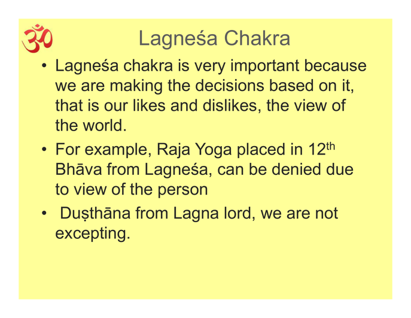
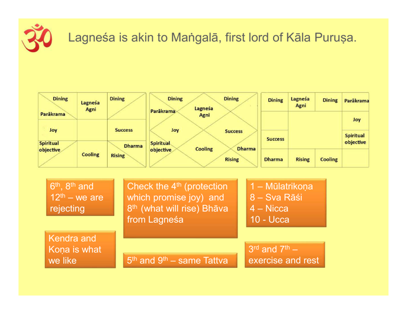

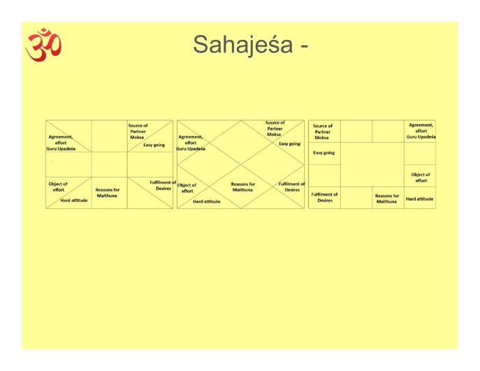

I’ll provide a comprehensive summary of this Jyotish webinar on Bhavesha (house lords). This covers lessons on the 4th-7th house lords:
Bhava as Dynamic Experience - Bhavas are not static but grow with knowledge and awareness - They represent states of mind, attitudes, and experiences - “By increasing knowledge of bhava we change the quality of the bhava”
Natural Energies: - Carries energy of Surya (natural 5th lord) and Jupiter (karaka) - Creates “trines” that shine - wherever 5th lord sits, 5th and 9th from there also illuminated
Main Effects: - Shows where we apply ourselves, what we study and learn - House opposite (7th from 5th lord) stays in darkness - what we neglect - Linked to Agni planets (Sun/Mars/Ketu) = love of Jyotish study - Shows what we love and have devotion for
Negative: When linked to 6th/8th/12th houses (Saturn’s domain) = clash of Sun/Saturn energies, can show taxation through that house
Core Nature: - “Master of vices” - represents shadripu (six weaknesses/toxic thoughts) - Has “dirt” that contaminates 2nd and 12th houses from its placement - Karaka: Saturn; Natural lord: Mercury
Key Drishtis to Check: - 3rd from 6th lord: Growth potential (Saturn’s future aspect) - 10th from 6th lord: What mind dwells on (Saturn’s past focus) - 7th from 6th lord: What enemies/thieves want to steal
Special Combination: - 6th lord in 1st/8th house: Anger when hungry (due to Agni/Mars connection)
Important: 6th house = lifestyle choices (free will), unlike 8th house (karmic debt, no free will)
Natural Energies: - Heavy Rajas (Shukra as lord and karaka) - Connected to Vaiyo (movement) and Shiva Linga - Saturn has digbala here
Relationship Protection: - 4th from 7th lord: Internal protection in relationship (if afflicted = internal problems/bickering) - 8th from 7th lord: External protection (affairs, outside dangers) - 7th from 7th lord: Highest desire for relationship (Shukra’s icha)
Other Key Houses: - 9th from 7th lord: Vivaha dharma - where marriage finds fulfillment - 3rd from 7th lord: Shiva’s blessing/curse on couple - 10th from 7th lord: Related to Shiva’s blessings - 11th from 7th lord: Potential health issues
Compatibility Rule (VERY IMPORTANT): - For couples, 7th lords should be in kendra to each other - This = blessing of Vayu and Shiva = couple walks life path together - Alternative: 7th lords in signs of same planet, or connected by parivartana - Without this: Bio (separation) through coldness, distance, lack of communication
Critical Distinction: - 7th house = your state/experience of relationships - 7th lord = the actual partners/people coming into your life - 7th lord in dusthana from 7th = lack of availability of partners - BUT once you have partner, then Parashara’s results manifest
Core Understanding: - Shows past life karma - both blessings and debts - “Why did this happen to me?” feeling = past life deeds - Two types of taxes: Health tax (2nd from 8th lord) and Wealth tax (5th from 8th lord)
Key Principles: - Stay with 8th lord and clean it up - this is your debt to pay - Check who the 8th lord is (Moon/Mercury/Venus etc.) to understand type of suffering
Three Salvations (Relief from 8th Lord): 1. 8th lord in good house 2. 8th lord in good sign
3. 8th lord conjoined benefic = blessing from past life (Rudra’s blessing)
Important Houses from 8th Lord: - 2nd: Health tax (check graha there for body part affected) - 3rd: Where coldness helps spiritual progress (Saturn’s growth) - 4th: Immediate relief (run here when pressure is high) - 5th: Wealth tax, who suffers financially - 7th: Icha (desire) but manifests as cruelty - DON’T RUIN THIS HOUSE - 8th: External pressure - best to avoid/run away from - 9th: Naraka (hell), places you get kicked out of - 10th: Mantra that can heal 8th house - 11th: Snakes talking - backstabbing, cruel language, provocation (don’t respond!)
Remedies (Natural 8th House Solutions): - Respect astrologers and doctors - Work on higher/spiritual self - Follow yamas/niyamas (do’s and don’ts) - Rishi mantras - Don’t kill, steal, lie, betray - Observe dietary discipline
Teacher’s Personal Example: - Dhanu lagna, 8th lord Moon in 9th with Sun (Amavasya dosha) - Malefic effect: War trauma, alcoholic father, many deaths witnessed - BUT Jupiter conjunct = blessing activated at age 15-16 - Result: Became vegetarian, started meditation = complete life change - 4th from 8th lord (12th house) gave relief through meditation and living abroad
Common Mistakes to Avoid: 1. Not checking both karaka AND natural lord of house 2. Forgetting that lord’s placement from lagna = our experience 3. Forgetting that lord’s placement from bhava = resources available to that bhava 4. Not considering dignity (exaltation/debilitation), yogas, parivartana, combustion, curses 5. Relying on ready-made tables instead of understanding principles
Why No Ready-Made Tables: - Creates lazy minds - Growth comes from working through each combination - Must understand WHY rishis said what they said
When Two Lords (Dual Signs): - Study both lords - See which is stronger, more prominent - Check which links to lagna or atmakaraka - Two lords = confusion in that area of life - For 7th house: Be careful if 7th and 12th share same lord
Philosophy on 8th House: - Never discuss 8th lord problems with clients directly (energy too heavy) - Instead: Give remedies, show relief paths, warn what to avoid - Focus on solutions, not doom - Nothing is black and white - always many layers and colors - Nothing lasts forever
The teacher emphasized that for any prediction, you need: - Who is the lord (planet) - What is the dignity (exalted/debilitated/etc.) - What yogas are formed - Any parivartana - Any combustion/afflictions - Conjunction with benefics/malefics
This is a complete framework for understanding how house lords operate based on their natural lordship, karaka, and the specific principles governing each house.
Would you like me to elaborate on any specific house lord or principle?
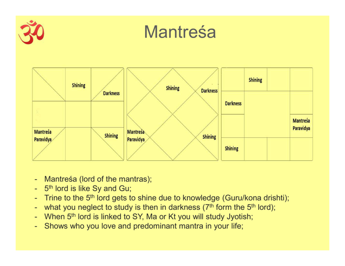
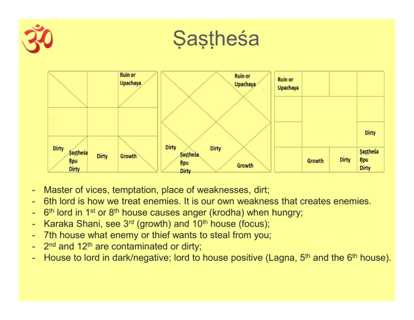
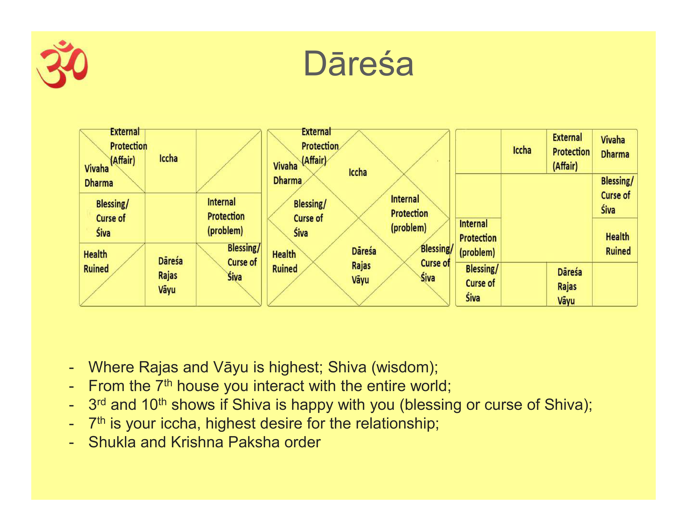
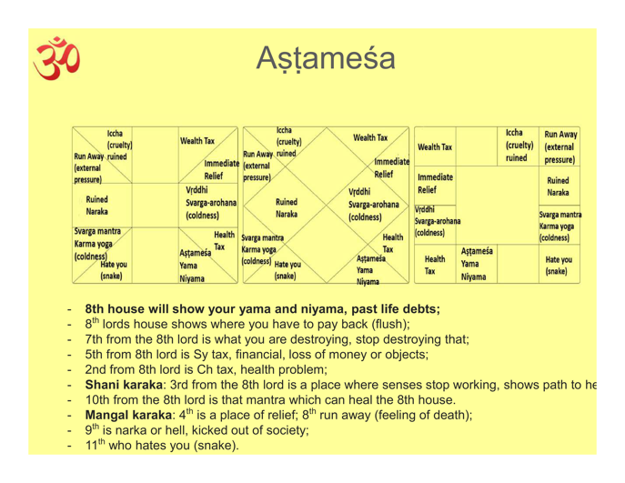
I’ll provide a comprehensive summary of this Jyotish lesson on Bhavesha (house lordships), focusing on the final four houses (9th-12th).
Important Limitations: - Cannot make final conclusions based solely on bhavesha placement - Must consider: strength (bala), yogas, karaka influences, and divisional charts - Bhavesha analysis is one layer of a complete chart reading
Two Ways to Analyze Bhavesha: 1. As Karaka: Shows destiny/divine support (hand of God) 2. As Natural Lord: Shows external efforts required
Primary Concept: Source of fortune and luck
Key Analysis Points: - Where 9th lord is placed = source of your fortune - 9th lord well-placed from lagna = experience happiness from that house - 9th lord well-placed from 9th house = resources available to that bhava
Critical Houses from Bhagyesha:
Rudra Tests (3rd & 10th from 9th lord) - Shani’s 3rd & 10th drishti: - Must keep these houses pure - 3rd from 9th lord: Financial issues if afflicted - 10th from 9th lord: Sorrow/depression if afflicted - Failure in these tests blocks fortune
Security Houses (4th & 8th from 9th lord) - Mangal’s aspects: - 4th: Security in birth family - 8th: Security in established family - Malefics here = insecurity, not belonging
Kama Drishti (7th from 9th lord): - Shows what you think you need to achieve for happiness - Very sensitive house
Expansion (2nd from 9th lord): - What naturally expands your fortune - Malefics here block this expansion
Rishi Entrance (12th from 9th lord): - Where spiritual knowledge enters - Malefics block this flow - Check sapta rishis and lordship
Bhakti & Support: - 5th from 9th lord: Seed of bhakti, mantra - 9th from 9th lord: Highest fortune support
Critical Rule: 9th house must be kept pure - remedies essential for tamasic grahas in 9th house, especially Rahu (biggest problem)
Primary Concept: HOW we work (not what job we do) - our work attitude
Four Karakas: 1. Budha (primary): Skills and desire for work 2. Shani: Labor/effort willing to put in, failures 3. Guru: Success and fruits of work 4. Surya: Societal need for our work
Grahas in 10th Show Work Style by Ritu (Season): - Surya/Mangal/Ketu (Grishma-summer): Work intensely early, need rest after - hot season pattern - Shukra (Vasant-spring): Demand comfort, aesthetics in workplace - Chandra (Varsha-rainy): Prefer closed spaces, need roof overhead - Budha (Sharad-autumn): Must know fruits of labor before starting - Guru (Hemanta-festival): Positive attitude, enjoy work itself - Shani/Rahu (Shishira-cold): Slow but steady, can work in difficult conditions
Key Houses from Karmesha:
Labor Houses (3rd & 10th from 10th lord) - Shani drishti: - 3rd: Mental labor, new ideas, new projects (Budha brings new) - 10th: Physical labor, mastering old projects (Shani improves existing)
Success & Dharma (5th & 9th from 10th lord) - Guru aspects: - 5th: Attainment of fruits of labor - 9th: Dharma in how we do work
Job Changes: - 8th from 10th lord: New job (same field, different company) - 11th from 10th lord: Complete career change (engineer to painter) - 4th from 10th lord: Why we stop working (health leave, vacation, firing)
Motivation (7th from 10th lord): - Shows what motivates us to work - Malefics here affect motivation quality
Blessings: Where 10th lord placed = blessings of Durga and Kubera (energy to do work)
Primary Concept: Measurement of time in this life, rebirth house
Karaka: Guru (so 5th & 9th from 11th lord = confusion, lack of knowledge)
Key Houses from Labesha:
Effort & Transformation (3rd & 10th from 11th lord) - Shani drishti: - 3rd: Intelligence efforts to increase gains - 10th: Ability/willingness to transform for quality time on earth
Objective (11th from 11th lord): - Shows what we really want to gain
Wealth (2nd & 4th from 11th lord): - 2nd: Daily cash flow - 4th: Actual stored wealth
Balance & Rejuvenation: - 7th from 11th lord: Perfect balance in gains/losses, satisfaction point - 6th from 11th lord: Where we rejuvenate, energy flows
Spiritual Perspective: Gaining = buying (future payback); Losing = liberation (spiritually better)
Primary Concept: Liberation, moksha - lord wants to set us free
Karakas: - Shani (primary) - Ketu (exalted) - Shukra (exalted) - Together = Tapasvi Yoga (great spiritual achievement ability)
Critical Concept - HAMMER HOUSES (3rd, 10th, & placement of 12th lord): - These are where losses can hit hard - Shani drishti from Vyayesha
The Requirement: Must not be greedy, must be willing to give/sacrifice
TRIGGER (4th from 12th lord): - This is the “rope” holding the hammers - Keep this house clean = hammers won’t hit - If 12th lord in lagna, respect mother - If in 2nd, respect kids/students, pure mantras
Other Key Houses:
Vices (7th from 12th lord): - What vices we’re prone to - Must be very careful here
Prayer & Temple (5th & 9th from 12th lord): - 5th: How we pray/meditate (graha shows deity preference) - 9th: Our temple, puja place
12th House Rules: Immune system, losses, very important for marriage, requires regular meditation
Malefic Influence Levels: 1. One malefic = nervousness (comes and goes) 2. Two malefics = problem requiring solution (has solution) 3. Three malefics = problem from inside, very difficult to remedy (both vayu and agni present)
Mitigation: Benefic conjunct malefic provides some relief
Retrograde Benefics: Bring stubbornness, won’t give up easily
Multiple Lordships: Stronger lord determined by: - More conjunctions - Higher dignity - “Democracy principle” - majority rules
This lesson emphasizes understanding the underlying principles and logic of why classical texts say what they do, preparing students for the Bhavadhyaya module where they’ll study all 144 combinations of house lords in houses.


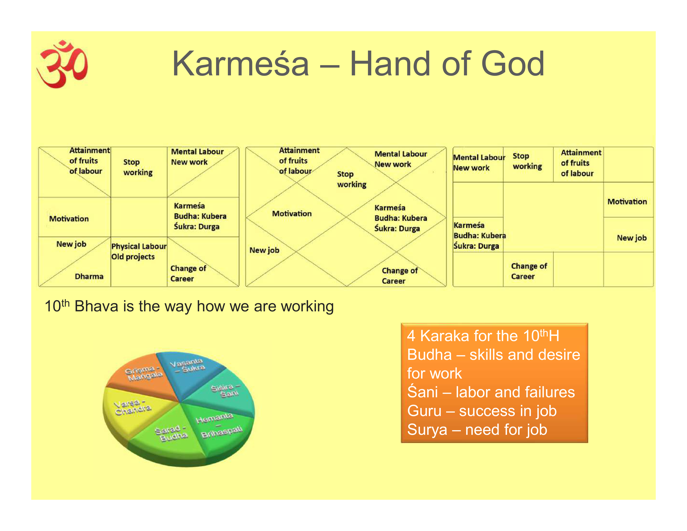

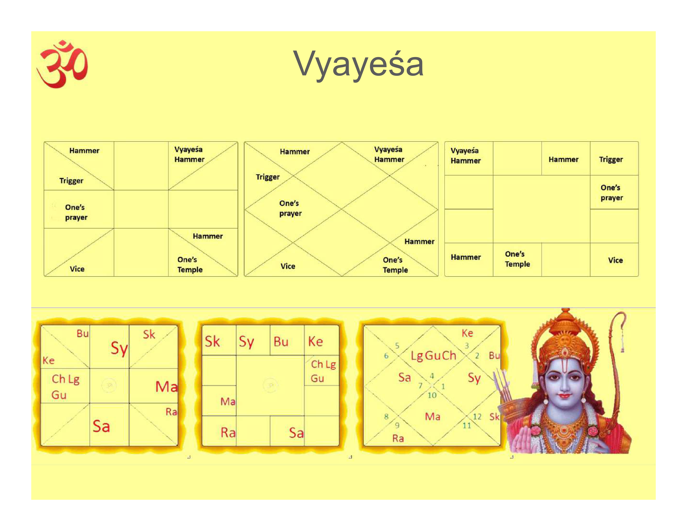
I’ll provide a comprehensive summary of this Vedic astrology lesson on Aprakasha Grahas (invisible planets). This is quite detailed, so let me break it into digestible sections.
Aprakasha Grahas are five invisible celestial points (not physical planets) that can eclipse or disturb the five Pancha Tattwas (elements). They are:
These are called “aprakasha” (without light) because they are invisible points that can disturb or destroy the light/purity of the tattwas.
This is visualized as an upside-down man (stick figure in black), representing how these points function:
Key principle: Left arm and right leg work together (move in harmony), as do right hand and left leg.
When reading Parashara’s results for these grahas in houses, you read from the Lagna BUT the results correspond to their “starting” rashi:
Level 1: Rashi Dispositor (Physical Manifestation) - If Aprakasha graha is alone in a house, see the lord of that rashi (dispositor) - The dispositor’s placement shows WHERE and HOW the affliction manifests physically - Exception: If dispositor is in own sign/mulatrikona/exaltation, the sin is cleared - the graha cannot reach that high dignity
Level 2: Nakshatra Dispositor (Mental/Emotional) - See the nakshatra lord (using reversed order for Papa Purusha) - Shows mental attachments, emotional afflictions, what the mind gets stuck on - Uses special reversed nakshatra lordship (Ketu↔︎Buddha, etc.)
Level 3: Conjunction with Planets - If Aprakasha graha is conjoined another planet, that planet gets afflicted - Most important to check: Surya dispositor, Chandra dispositor, and Lagna lord (the three “self points”) - Surya dispositor afflicted → affects progeny, lineage, wealth - Chandra dispositor afflicted → affects body, health, longevity (sharira) - Lagna lord afflicted → affects intelligence, knowledge, brain, fame
Would you like me to clarify any specific aspect of this material?


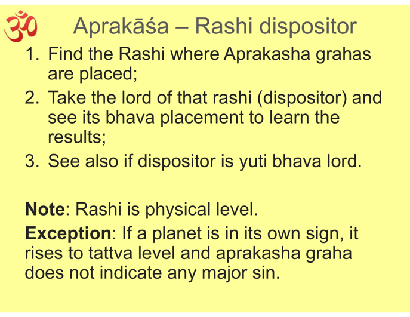


I’ll provide a comprehensive summary of this Vedic astrology lecture on Upagrachas (shadow planets) from the PJC-1 course.
What are Upagrachas? - Mathematical points (not physical bodies) showing the strongest influence of planets on Earth - Called “children of the grahas” who do the actual work of their parent planets - Calculated at beginning, middle, or end of time portions (velas) - This course focuses on 7 Upagrachas calculated at the middle point
Two Key Analysis Points: 1. Rashi Lord - Shows how the karma manifests in life (what actually happens) 2. Nakshatra Lord - Shows the thoughts/desires before action (what you want/think)
Example - Steve Jobs: - Kala in Makara (6th house) with Buddha - Shani (rashi lord) exalted in 3rd house → resources through own effort, discipline - Mars (nakshatra lord) in 9th house → global ambitions, protection-focused - Shows journey from orphanage to massive wealth through communication/technology
Example - Swami Vivekananda: - Paridhi in Tula (11th house) - Venus (rashi lord) + Buddha parivartana with Shani → Tapasvi Yoga (spiritual achievement) - Guru (nakshatra lord) in 11th house → formalizing occult knowledge globally - Created famous divisions of yoga (Karma, Bhakti, Jnana, Raja)
Example - Christopher Reeve (Superman actor): - Mrityu in Vrishabha - Moon (rashi lord) debilitated, conjunct Mars, with Ketu influence → body lost protection (spine damaged) - Mars (nakshatra lord) in home sign → strong prana, survived decades in wheelchair
Example - Albert Einstein: - Nakshatra lord Ketu in 2nd house → endless learning, thinking beyond boundaries - Ketu in 6th lordship → Manta Yoga (high intelligence, wants to change things) - Ketu-Moon parivartana → infinite learning potential - Surya (rashi lord) in 10th house → fame and earning through position
Example - Abraham Lincoln: - Yamaghantaka in Rishabha - Mars (nakshatra lord) in 9th house → wanted to establish protection globally (fight against slavery) - Venus (rashi lord) exalted with Guru → protection established - Mars-Rahu conjunction + Rahu in Marana Karaka Sthana → died after winning war
Example - Adolf Hitler: - Kodanda in Vrishchika - Shani (nakshatra lord) in Karka 10th house → Bheda niti (strategic, persistent, building revenge plans) - Mars (rashi lord) in Marana Karaka Sthana → death when revealing plans
Example - Ramakrishna Paramahamsa: - Gulika in Sagittarius (11th house) - Guru (rashi lord) in 5th house, aspected only by exalted Venus → high purity achieved - Venus (nakshatra lord) exalted → very high ambition for purity - Guru-Venus (Guru Yoga) → learned both spiritual and material
Contrast - Hitler: - Both rashi and nakshatra lords in Marana Karaka Sthana → collecting poison, not cleansing
This comprehensive system shows how mathematical points reveal the deepest karmic patterns and life purposes through planetary children doing their parent’s work.


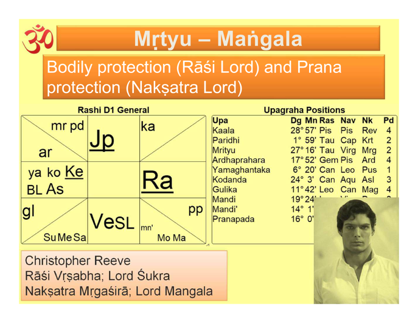


I’ll provide a comprehensive summary of this Vedic astrology (Jyotish) lesson on Vishesha Lagnas (Special Ascendants).
Five Special Lagnas - calculated with uniform circular motion, independent of regular lagna: - Based on Pancha Mana (five aspects of mind) - Calculated from sunrise + sun’s degree at sunrise - Move at uniform speed (unlike regular lagna’s 2-hour average)
Formula: Time from sunrise (in hours) × multiplier + Sun’s degree at sunrise - Bhava Lagna: ×1 (maps to 1st house) - Hora Lagna: ×2 (maps to 2nd house)
- Ghatika Lagna: ×5 (maps to 5th house) - Prana Pada: ×20 (maps to 8th house) - Vighati Lagna: ×25 (advanced study)
Represents: Mind’s impression of 1st house matters - approach, attitude, views of self
Key Points: - Can fall in 1st, 2nd, 3rd, 11th, or 12th from lagna - Distance from lagna = degree of distortion in self-view - 2nd house placement: ahead of yourself, progressive, future-thinking - 12th house placement: behind yourself, regressive, dwelling in past - Makes you “not a typical [sign]” - attitudes differ from lagna
Connection to Lagna: - If linked: self-knowledge, self-realization possible - If unlinked: distortion remains, but still influences behavior - Graha linking them acts as bridge for understanding
Example - Barack Obama: - Makara lagna (shy from conflict, work-focused) - Bhava lagna in Kumbha (2nd house) with Ketu - Result: Progressive thinker, welcomes debate (unlike typical Makara) - Ketu: possibly introverted, introspective
Represents: Mind’s perception of wealth, what you value, resources available
Key Principle: “Hari sustains us” - all resources, food, sustenance
Critical Rules: - Agni planets (Sun, Mars, Ketu) needed for earning capacity - Agni should be in Hora lagna OR 2nd OR 10th from Hora lagna - Ketu in 1st or 8th from Hora: destiny loss of wealth
What You Value (by house placement): - 1st/7th: Self/spouse - 2nd/8th: Family, community/debts, hidden wealth - 3rd/9th: Courage, siblings/knowledge, dharma (check Mangal/Guru for honesty) - 4th/10th: Home, mother/work, karma - 5th/11th: Children, creativity/gains, friendships - 6th/12th: Service, health/foreign, spirituality
Important Houses: - 5th from Hora: What motivates you to earn - Connection to lagna: Brain knows where to find money
Spiritual Warning: Don’t dirty where Hora lagna is placed - keep that house pure or lose resources
Example - Obama: - Hora lagna in 9th house (values knowledge, education, worldview) - Rahu (hora lord) aspects lagna - creates link - Mercury also links (7th house, graha drishti) - Earnings: Books and speaking (Mercury), hidden sources (Rahu-Mangal in 8th)
Represents: Emotions, power, fame, position - “makes things happen”
Key Principle: Jala (water) connection essential - Need emotional connection with people - Support from right people to gain/maintain power
Critical Analysis: - Jala on Ghatika: Can have power - 4th from Ghatika: Popularity, connection to people (need more jala) - 5th from Ghatika: Where you seek power - 12th from Ghatika: Who/what can pull you down
Tactics to Pull Down (12th house planets): - Shani: Scandal, bad health, fall from grace, retirement - Rahu: Speculation, scandal, doubt - Shukra: Bribery through sweet talk - Buddha: Bribery with money
Yogas: - Planet linking lagna + Ghatika = Yogada - Planet linking lagna + Hora = Varada
- Planet linking all three = Mahayogada (can activate with mantra/gemstone)
Example - Obama: - Ghatika in 5th house with Moon (strong jala) - Shani aspects lagna - creates link - Power source: 9th house (education, mentors) - 4th from Ghatika (8th house): Rahu-Mangal, no jala - disconnect from people due to military/war affairs - Gained power in Guru-Guru, Guru-Chandra dashas (both link to Ghatika)
Represents: Where sun’s ray/prana falls at birth - source of strength
Calculation: Same formula ×20, plus correction: - Sun in movable sign: no correction - Sun in dual sign: +120° - Sun in fixed sign: +240°
Auspicious Placements (per Parashara): - Lagna, 5th, 9th (konas) - 4th, 10th (kendras) - 11th house - Note: Some debate about 2nd house
Key Concepts: - House with Prana Pada = empowered, has most prana - Lord of Prana Pada = also empowered - Planets joining Prana Pada = get life force - Weak Prana Pada = lack of vitality, strength
Advanced Uses: - Birth time rectification - Link to devatas - Spiritual practices - What you love/hate (6th/8th from Prana Pada) - Controlling prana through pranayama
Charts to Create: - Can make separate Bhava/Hora/Ghatika chakras (add ±15° from special lagna degree) - These show pure mind perception (no rashis, no resources) - Useful for psychological understanding
When to Use: - Check D1 first for connections - If no link in D1, check D3 (karma can bridge gap) or D9 (destiny/post-marriage) - For Hora: also check D2 - For Ghatika: also check D5
What Links Mean: - Rashi drishti: Permanent, always there - Graha drishti: Need desire/effort, dasha-dependent - Parivartana: Exchange bridges gap - Any connection helps
Gemstones: Can activate Mahayogada but use caution - may strengthen one area while weakening another (Rajas, not Satwa)
Keep Pure: Don’t “dirty where you eat” - maintain purity of house where Hora/special lagnas fall
Free Will: Remember these are mind perceptions - actual manifestation depends on lagna applying itself
Vishesha Lagnas show how your mind perceives different life areas. When connected to lagna, you can access these resources/understanding. When disconnected, potential exists but you may not utilize it. They work as independent “candles” in your chart that lagna can reach for.
Would you like me to clarify any specific aspect of these special lagnas?
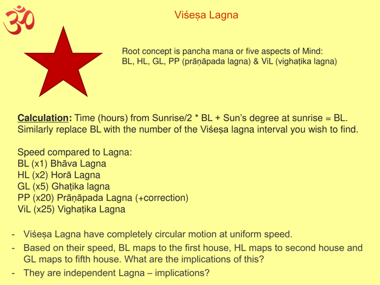
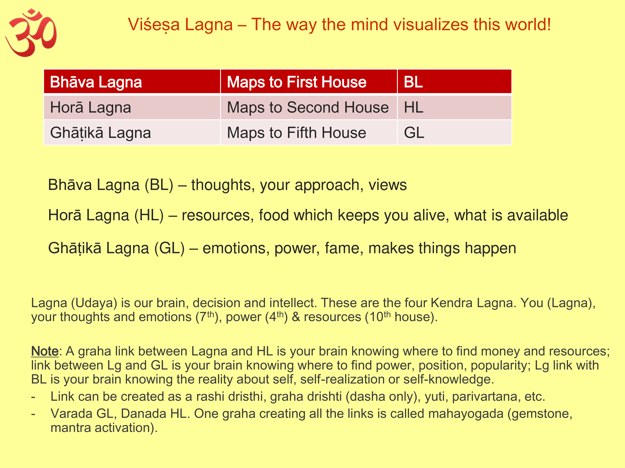
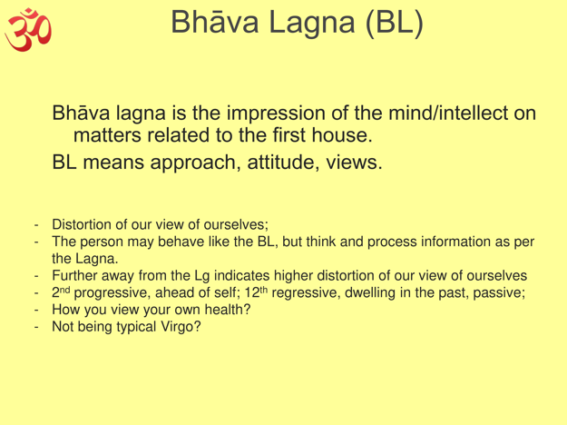

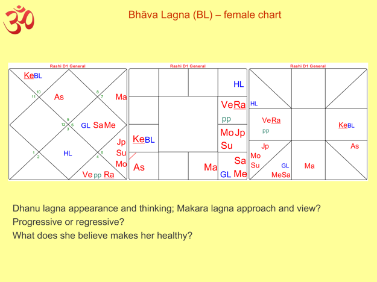
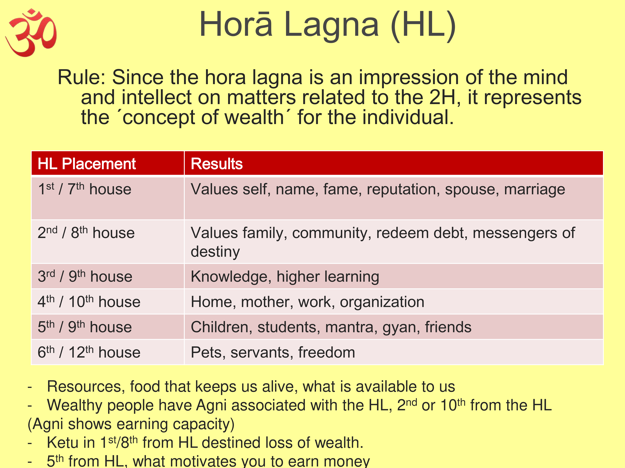
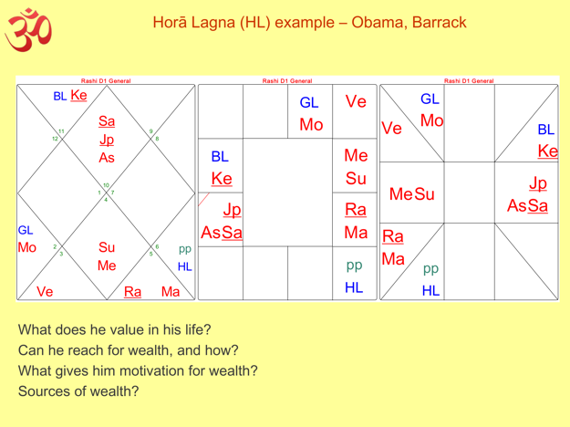
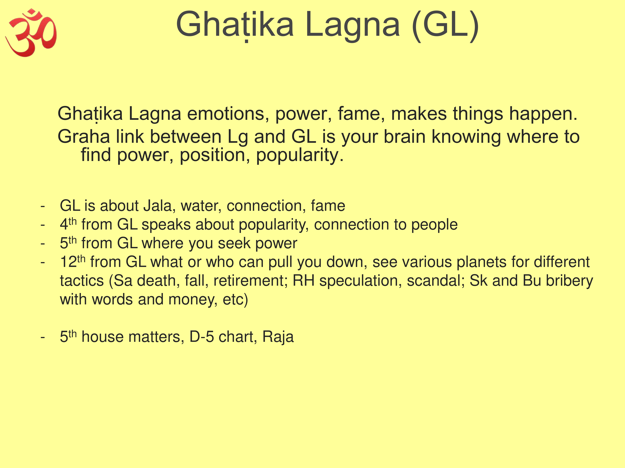


I’ll provide a comprehensive summary of this Jyotish webinar on Achada Nadrishti (Auspicious Aspects):
Achada Nadrishti refers to special planetary aspects that form before birth and reveal what brings happiness, security, and fulfillment. The term “achada” means auspicious - this technique focuses on positive indications only.
1. Surya Bhava (7th from Sun) - Shows what the soul desires - Represents karma resolution - either through family (pitris) or spiritual path (devatas) - Can indicate life purpose and soul-level intentions
2. Chandra Bhava (9th from Moon) - What the mind needs to feel happy and secure - If unfulfilled, person cannot be truly happy - Multiple planets here = multiple conditions for happiness (can be challenging to balance)
3. Mangala Bala (11th from Mars) - Shows our strength and how we deal with the material world (bhuloka) - Not just physical strength - includes logic, strategy, how we “fight” - More planets here = more strength sources
4. Buddha (1st house - where Buddha is placed) - Related to speech, friends, and what we study - Shows communication style and social circle - Dispositor reveals quality of friendships
5. Guru Upadesha (3rd from Jupiter) - What advice/teachings we receive - Shows nature of gurus and spiritual guidance - Can reveal pressure or burden from teachings
6. Shukra (5th from Venus) - Related to progeny - ability to have children - Most important house for assessing fertility - If blocked here, other indications won’t manifest
7. Shani - Not covered (Shani, Rahu, Ketu don’t have achadas as they’re malefic)
Overlapping Achadas: Same house can be multiple achadas simultaneously - these work together, not in conflict
Parivartana: Don’t shift planet positions when calculating achadas - keep planets where they are
Retrograde: Don’t change counting direction for retrograde planets
Afflictions: Check if achada house/lord is afflicted - shows obstacles to fulfillment
Dispositors: Always check where the lord of achada house is placed and its condition
Henry VIII - 7th from Sun (Taurus) afflicted by Rahu/Shani scissors = marriage problems; 9th from Moon has Rahu (7th lord) = security through marriage but unstable
Osho - 9th from Moon (Leo) lord in 12th from Moon in 6H = desires things he rejects when obtained; Ketu (6L) in 3rd from Jupiter = controversial teachings
Nick Vujicic (born without limbs) - 11th from Mars has 4 planets = great inner strength despite physical challenges
Amma (Hugging Mother) - Buddha conjunct Sun = not known for speeches but for touch/hugging; 4th house focus = purity brings security
Jiddu Krishnamurti - 3rd from Jupiter (8H) with Ketu, lord (Sun) in zero digbala = burdened by spiritual organization, eventually rejected it
Octuplet Mother - 5th from Venus (Sagittarius) is also 7th from Sun, lord (Jupiter) is atmakaraka in 2H = soul’s desire for large family; Mars in 9th from Moon = prefers independence
Would you like me to elaborate on any specific achada or example?


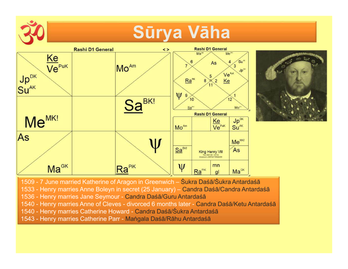
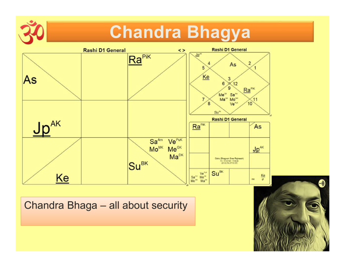
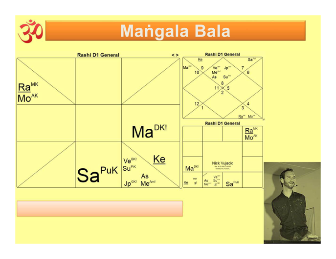


I’ll provide a comprehensive summary of this Jyotish webinar on Arishta (afflictions) and longevity. This is quite extensive, so I’ll organize it by major topics:
Age Restrictions: Never predict longevity until a person is over 24 years old. Three categories exist: - Balarishta: Death in first 12 years (linked to Moon karma/mother’s side) - Yogarishta: Death between 12-20 years
- Janamarishta: Death between 20-24 years (linked to Sun karma/father’s side)
Predicting longevity before 24 can cause the astrologer to acquire Gayatri dosha.
Sun’s Role: Brings the soul (father conceives soul through food months before conception), shows hereditary issues, ignites all beginnings
Moon’s Role: Sustains life (mother provides blood/tissue, gives milk), represents body rejuvenation and longevity. Most arishta yogas involve afflicted Moon because Moon = sustainer of life.
No longevity discussion occurs without Saturn. In all dangerous combinations, Saturn is either: - Directly causing affliction, OR - Acting as karaka for the afflicted planet
Saturn represents dukkha (sorrow), delay, decay, weakness—the underlying principle of Dusthana houses.
Kendras (1,4,7,10) - Vishnu/Moon concept: - Most important houses—the four pillars of life (visualized as 4-petal lotus) - Only houses we have direct access to - 1st & 7th = high tide (high emotions): birth/coming and going/journey - 4th & 10th = low tide (rest/relaxation): home and work - Planets in kendras cooperate and support each other
Konas (5,9) - Lakshmi/Shiva concept: - Resources and knowledge that sustain life - 5th house: Future, mantra, prayers, visualization, children - 9th house: Past, guru knowledge, father, dharma - When bhava lords placed in konas: shows what you pray for/admire
Dusthanas (6,8,12) - Shani concept: - Represent sin, sorrow, karmic debts (“taxes to be paid”) - 6th: Weaknesses (shadripu), lifestyle choices, temptations—HAS FREE WILL - 8th: Past sins (rina), karmic debts, unseen diseases—NO FREE WILL
- 12th: Losses, foreign residence, blame
Upachaya (3,6,10,11) - Free will houses: - Can grow and develop through effort - Lagna lord in 3rd/6th = Dhimantha Yoga (extreme intelligence) - Lagna lord in 10th/11th = Siddha Yoga (great achievements)
Trika (3,6,11) - Brahma houses: - Contribute to our creation - 6th house: Body creation (Brahma sits here) - 12th house: Mind creation (Saraswati sits here)
Papakartari Yoga: Planet “scissored” between two malefics (one in 12th, one in 2nd from it). Considered a type of curse.
Papa Yoga: Malefic in 2nd OR 12th from planet (less severe)
Curse Definition: Benefic afflicted by 2+ malefics (by conjunction or aspect). Requires remedy.
Severe Longevity Threat: 3-4+ malefics afflicting longevity houses/Moon. Can reduce longevity by decades or entire “compartments” (36-year periods).
Rashi Drishti: Constant, permanent influence - Malefic rashi drishti: Permanent affliction affecting longevity - Benefic rashi drishti: Permanent protection (like mother always doing pujas)
Graha Drishti: Desire-based, can be activated - Malefic graha drishti: Desire to inflict pain (shows specific emotions: Mars=anger, Rahu=betrayal/shock, Saturn=delay/sorrow, Ketu=accidents/mistakes) - Benefic graha drishti: Desire to protect (can activate through mantra)
Planets in specific houses become “death-inflicting”: - Shows dharmic debt related to that planet - Planet/person it represents may sacrifice most for you (often unrecognized) - Key insight: Houses lorded by Marana Karaka planets are MOST afflicted - Remedy: 40 days of Vishnu avatar mantra for that planet
Any planet in 12th house = offering/sacrifice/expenditure
Four Main Marriage-Givers (want marriage): 1. Surya (Sattva): Spiritual, dharmic marriage 2. Chandra (Sattva): Emotional, nurturing
3. Shukra (Rajas): Physical attraction, aesthetics, “tall dark handsome” 4. Rahu (Tamas): Foreign, experimental, research-oriented
Marriage-Preventers (cause celibacy/delay): - Mars: Celibacy, conflict, lack of sleep - Ketu: Wants children first (tests marriage), chaos - Saturn: Old man energy, delays, “no time” - Mercury: Excuses (need more education, not mature, money issues) - Jupiter: Most balanced (wants dharma + children, but also learning)
Key Points: - Afflicted Naishta graha = suffering in finding/maintaining marriage - Multiple planets in 12th = they “fight” over who brings marriage - Rashi drishti to 12th by these 4 main planets = can bring spouse - Graha drishti to 12th = temporary relationships, affairs
12th house also shows: who you trust to sleep next to, rejuvenation, feet (direction you’re walking), gunas of mind.
Benefits Protect: - Guru, Buddha, Shukra in kendras = always protect - Guru = protects life (Jiva karaka) - Buddha = protects body - Shukra = rejuvenation (Mritunjaya, nectar keeper) - Shubhapati always protects (dispositor of Moon = your sustainer)
One strong benefic in kendra can save everything (kendras cooperate—Vishnu/Moon concept)
Nodes multiply effects (retrograde planets behave similarly—3x strength)
When judging bhava lord placement: - From Lagna: Shows YOUR experience of that bhava - From the bhava itself: Shows resources available TO that bhava
Example given: 6th lord (celibacy) in kendras strengthens celibacy: - In 4th: Move out of parents’ home to marry - In 10th: Work causes separation (Conference Yoga) - In 7th: Partner-related reasons for celibacy - In 1st: Your behavior/choices cause celibacy
Chart Analysis Priority: 1. First check planet IN the house (tenant = most important) 2. Then check lord of house (owner) 3. Then check drishtis
Parashara’s shloka serve multiple purposes: 1. Specific extreme combinations (literal interpretation) 2. Teaching principles of affliction quantification 3. Basis for understanding curses, longevity, various yogas 4. Each shloka teaches different timing/prediction principles
Bhava are dynamic, not static: They grow/change with knowledge and experience. “By increasing knowledge of bhava, we change the quality of bhava.”
Chart with 8 planets in 6th house—why no longevity/mental issues?
Answer: - No specific arishta yoga present (needs Moon severely afflicted + Saturn + longevity house connection) - All those planets create Hora Lagna wealth yogas (became millionaire musician) - Shubhapati (Moon dispositor) in own sign = Shiva’s blessing, mental strength - Benefits conjunct = knowledge, protection - 6th house planets brought fame, wealth, court cases (6th house themes) - Shukra in 6th = sacrificing partner (Marana Karaka principle) - Rahu in 12th (7th lord) = possible affairs, foreign elements in marriage
Lesson: Don’t judge by house placement alone—look for specific yogas, benefic protection, and actual combinations described in shastras.
This webinar emphasizes that arishta combinations are specific and require multiple factors. Protection through benefits, proper remedies, and understanding the layered meanings in Parashara’s teachings are essential for accurate analysis.
# #| echo: false
# # slides(155)
# # slides(166)
# # slides(167)
slides(177)
slides(178)
slides(179)
slides(180)
slides(181)
# slides(182)
# slides(183)
# slides(184)

I’ll provide a comprehensive summary of this Jyotish lesson on Arishtas (dangers/misfortunes) related to parents.
This lesson focuses on identifying combinations that indicate problems, suffering, or death of parents through various yogas (planetary combinations).
Moon’s Fundamental Rule - Moon dislikes the 12th house from itself - Moon in 5th house (afflicted by malefics) → danger to mother (4th house is 12th from 5th) - Moon in 10th house (afflicted) → danger to father - Moon in 8th house → danger to spouse
Grahas and Houses They Don’t Support - Surya, Shani, Guru: 6th house from themselves - Chandra, Mangala: 12th house from themselves
- Buddha: 3rd house from itself - Shukra: 4th house from itself
1. Parents Destroyed - Buddha + Shukra in 2nd house with Surya + Rahu + Shani - Two different tattvas (Agni + Vayu) create destruction like fire with wind - Shows Pitri dosha; may be raised by aunt/uncle
2. Matriha (Mother’s Danger) - Malefics in 7th AND 8th house from Moon - 7th house = Maraka (death-inflicting house) - 8th house = house of death
3. Goat Milk (No Mother’s Milk) - Surya Ucha or Nicha in 7th house - Shows separation from mother or her death - 7th house = 4th from 4th (relationship with mother) - Strong Agni disrupts Jala tattva (emotions/nurturing)
4. Karaka Bhava Principle - 4th from Moon = actual mother - 9th from Sun = actual father - If these houses are afflicted by malefics → danger to respective parent
5. Mrityu Bhava (Death Houses) - Rudras = 2nd and 8th house lords (protect our Prana) - For father: 2nd and 8th from 9th house = 10th and 4th houses - For mother: Count Bhava Bhavam from 4th → 6th and 12th houses - Malefics in these houses can harm the parent
6. Blocking/Malika Yoga - When 2 consecutive houses have malefics, the next house is blocked - Example: Guru in 1st + Shani in 2nd + Rahu in 3rd → 4th house (mother) destroyed - Must be at least 2 bhavas (one odd, one even = Ida and Pingala blocked) - Flow of Prana is interrupted
7. Chandra Kona - Weak Moon (Krishna Ekadashi to Shukla Panchami) + malefics aspecting 5th and 9th from Moon - 5th and 9th = support houses; if blocked when Moon weak → danger
8. Yama Yoga - Mars + Shani within 1 degree, in Kendra to Moon → problems for mother - Two tamasic grahas in Graha Yuddha (planetary war)
9. Unmada (Insanity/Death of Mother) - Shani in 1st + Mars in 7th + Moon in 6th - Both in Marana Karaka Sthana (death-inflicting positions) - More severe than Mars in 1st + Shani in 7th (which is just tension)
10. Father Dies - Guru in 1st + Surya/Mangala/Shani/Buddha in 2nd - Guru protects 9th house until marriage - When focus shifts to 7th house (marriage), 9th house loses protection
11. Pitri Karaka Affliction - Surya Yuti malefics OR Papakartari (malefics on both sides) - Plus malefic in 7th from Surya → father’s death - Without 7th house malefic → only suffering (Kashta), not death
12. Pitri Kashta (Father’s Suffering) - Surya in 7th + Mars in 10th + Guru/Rahu in 12th - Mars in 10th = Digbala (very strong) = Yama’s power activated - Mars doesn’t protect 9th house from 10th position
13. Surya Amsha - Shani-Surya connection in Rashi + Surya in Mars Navamsha - Gulika (Shani’s child) = illness carrier - Mrityu (Mars’s child) = death carrier - Combination makes illness fatal
14. Parents Live Abroad/Adoption - Malefics in 4th + 10th + 12th houses - All three Marakas afflicted → person completely uprooted - Can indicate foreign adoption
15. Guru Chandala (Guru-Rahu) - In 6th, 1st, or 4th house → problems to father - Rahu eclipses Guru (Karaka of 9th house) - Rahu in 9th house = Marana Karaka Sthana - In Dikchakra: Guru = Ishana (NE, knowledge), Rahu = Nirriti (SW, chaos) - opposite directions - Rahu blocks Ishana direction where Guru aims
Tattva Dosha - One tattva afflicting = manageable (fire alone) - Two tattvas = destructive storm (fire + wind) - Three malefics = always involves 2 tattvas = curse level
Gradation of Affliction - 1 malefic = tension - 2 malefics = problems needing solution - 3+ malefics = very serious problem
Drishti Types - Graha Drishti = temporary problem, desire-based (like book on shelf) - Rashi Drishti = permanent problem, knowledge-based
Papakartari Yoga - Malefics on both sides of house/planet = scissors cutting - The bhava/graha in between is hurt
12th House in Navamsha - Acts like 8th house in Rashi chart - Related to death/spirituality - Navamsha houses shift: 5th in Navamsha = 1st in Rashi, 2nd in Navamsha = 10th in Rashi
Retrograde Planets - Don’t shift lordship - Think they’re in the Rashi from Lagna - Example: Guru retrograde in 7th (Tula) thinks it’s in Mesha, but stays in 7th house - Shows stubbornness and strength
1. Danilo Kiš - Father alcoholic, violent, institutionalized, died in concentration camp - Partial yogas present - Surya-Shani in 2nd (Pitri dosha) - Mars in 9th from Surya (afflicting father’s house) - Multiple partial combinations = suffering occurred
2. Malcolm X - Father died age 6, mother institutionalized age 14 - Drishti on Moon (Buddha + Mars connection + Shani aspect) - Matriha present (Shani in 7th from Moon, Mars lords 8th) - Karaka Bhava: Rahu in 4th from Moon, Ketu in 9th from Surya - Both parents were activists (Rahu-Ketu extremes) - Malika Yoga on 9th house (blocked by Mars and Rahu)
3. Bill Clinton - Father died before birth - Moon in 10th (not 5th) = danger to father - Surya in Papakartari - Surya Amsha present - Moon afflicted by Mars, Shani, Ketu
4. Steve Jobs - Given for adoption at birth - Only minor combinations: Ketu in 4th from Moon (conjoined Guru = good intention, mistake) - Surya in 7th (partial goat milk = distance from mother) - Shows one combination alone won’t cause demise
5. Harshan’s Chart - Mother’s death - Only Chandra Kona present - Demonstrates one yoga alone typically insufficient
Never judge from one principle alone - Need multiple factors:
All three must be afflicted for severe results
Use the template/checklist to systematically check all combinations
Partial yogas show suffering, not necessarily death
Full yogas require exact conditions - modifications reduce severity
This is introduction only - Complete analysis requires D12 (Dwadashamsha) chart for parents
Don’t jump to conclusions - These are strong starting points for investigation, not final verdicts
Benefits provide protection - Guru, Shukra, Buddha can save even in difficult combinations
Timing requires Dasha - These yogas show potential, dashas show when
Would you like me to elaborate on any specific yoga or principle?


I’ll provide a comprehensive summary of this Jyotish lesson on the Dasavatara (10 incarnations of Lord Vishnu):
The teacher shares how receiving a jade Ganesha statue and Vyasa yantra led to teaching this Parashara Jyotish course, emphasizing that students are exactly where they need to be despite difficulties faced during the year.
Meaning of Avatar: - “Ava” (descend) + “tarati” (cross over) = deliberate descent of deity from heaven - Avatar = Guru + Shakti of the guru coming together - Each avatar has an associated Mahavidya (shakti/mother form) - Hidden in Parashara’s first shloka is the parampara mantra: “Om Rama Krishnaya Namaha”
Why Avatars are Different from Humans: - Souls have two parts: Jivatmansha (living being) and Paramatmansha (divine) - Avatars have higher proportion of Paramatmansha - We study avatars to increase our own divinity/sattvaguna
Parashara’s List (for Ishta Devata/spiritual practice): 1. Sun - Ramachandra 2. Moon - Krishna 3. Mars - Narasimha 4. Mercury - Buddha 5. Jupiter - Vamana 6. Venus - Parashurama 7. Saturn - Kurma (tortoise) 8. Rahu - Varaha (boar) 9. Ketu - Matsya (fish) 10. Lagna - Kalki
Jagannath Temple List (for worldly affairs/Dharma Devata): - Mercury: Balarama instead of Buddha (agricultural economy, designed plow) - Jupiter: Three stages - Upendra (sansara), Trivikrama (perfect brahmana), Vamana (moksha) - Venus: Rishikesh (householders) vs Parashurama (monks/overcoming karmas) - Rahu: Also worshipped as Sukhara (breath-giver, used during childbirth)
Placed in kendras, having more Paramatmansha: 1. Sri Rama - Moon in lagna, Sun in 10th house (born at noon) 2. Sri Krishna - Moon in lagna, Sun in 4th house (born at midnight) 3. Narasimha - Moon and Sun together in lagna (born Krishna Chaturdashi) 4. Varaha/Sukhara - Moon in lagna, Sun in 7th house
Key chart requirement: Moon MUST be in 1st house for any avatar (representing sattvaguna, compassion, sustenance)
Sadhu & Scorpion Story: - Sadhu repeatedly saves drowning scorpion despite being stung - Lesson: Maintain your guna regardless of others’ nature - Scorpion’s fear caused defensive reactions - We must not lower our standards based on others’ behavior
Krishna’s Gift: - Sri Krishna came at beginning of Kali Yuga - Established Nama mantra (name itself as mantra) for this age - Even calling God’s name works as mantra in Kali Yuga - Our own name is our first mantra
Bhagavan Mantras (for vegetarians): Can perform 40-day mantra practice for any troublesome planet/house lord
Special Mantras: - For digesting knowledge: “Om Namo Bhagavate Vasudevaya” - For Mahapurusha yoga/kendra issues: “Om Namo Bhagavate Mahapurushaya”
Assignment: Study each Dasavatara, list attributes, find pictures, study charts of Sri Rama (with Ramayana) and Sri Krishna (with Mahabharata)
Is there any specific aspect you’d like me to elaborate on?


I’ll provide a comprehensive summary of this Vedic Astrology (Jyotish) lesson on Sutika (birth circumstances) and Nisargika Dasha (natural planetary periods).
Definition & Scope - Sutika means circumstances related to birth (suta = child, ka = creation) - This is introductory level - full analysis requires divisional charts (D9, D7, D8) - Modern hospital births make some classical observations difficult
Key Charts for Birth Analysis - Rashi (D1) lagna: Most important for birth circumstances - Navamsha (D9) lagna: Shows problems/complications during delivery - Strong D1 lagna = normal delivery; afflicted D9 lagna = complications
Navamsha Lagna Afflictions - Shani (Saturn): Slow, painful delivery - Mars: Surgical intervention, cesarean, tools used - Ketu: Forceps, vacuum extraction, instruments - Rahu/Ketu: Umbilical cord problems; Rahu can show extra membrane on baby
Birth Timing Karakas (Day vs Night birth) - Day birth: Surya = father, Shukra = mother - Night birth: Shani = father, Chandra = mother - If karaka is in 1st, 7th house or on D9 lagna, that parent prayed for the child’s birth - Stronger karaka connection shows which parent’s place/lineage the birth occurred in
Analyzing Birth Circumstances 1. Check which karaka (mother/father) has better connection to lagna 2. Examine 5th house from D9 lagna in D1 chart (rashi from navamsha technique) 3. Check Moon/Venus in D1 for mother’s circumstances 4. Lagna lord afflictions = birth complications
Breech/Abnormal Birth: Lagna rising with tail (certain signs) + afflicted lagna lord
The Natural Life Cycle (108 years total) - Moon (0-1): Complete dependence on mother - Mars (1-3): Learning individuality, fighting for self - Mercury (3-12): Learning language, knowledge; gender doesn’t matter - Venus (12-32): Material life, relationships, earning, comfort - first guru (Shukracharya) - Jupiter (32-50): Responsibilities, saving money, children - second guru - Sun (50-70): Learning to give up, delegate - Saturn (70+): Renunciation, ashram life
Key Concepts - 108 years = physical maximum (9 signs × 12 = 108) - 120 years (Vimshottari) = gift from rishis - Extension beyond 108 requires karmic blessings - Shows how aligned we are with natural life progression
Step 1: Assign Weights Based on Drishti
From mahadasha lord as “lagna”: - 3rd & 10th houses: 3/4 of dasha - 4th & 8th houses (Mars aspect): 1/4 of dasha
- 5th & 9th houses (Jupiter aspect): 1/3 of dasha - 7th house: 1/7 of dasha - 2nd, 6th, 11th, 12th houses (no drishti): Full (1) dasha - Dasha lord itself: 1 - Nodes (Rahu/Ketu): Not used
Step 2: Calculate ‘M’ Value - Sum all weights: (1 + 1/3 + 1/3 + 1 + 1/7 + 1 + 1) = M - Multiply by mahadasha years (e.g., Jupiter = 18 years) - Convert to years, months, days
Step 3: Antardasha Order
When Multiple Planets in Same House: - Exalted planet first - Then Mulatrikona - Then own sign (swarashi) - Then lower degree before higher degree (natural progression) - Exalted planets DON’T exchange in parivartana
What It Shows - How aligned you are with natural life progression - Why certain life events happen at unusual ages (e.g., marriage in Jupiter dasha instead of Venus) - Starting point for understanding life timing
Practical Example (Teacher’s chart) - Venus mahadasha, Sun antardasha: Life-threatening car accident - Venus = 6th lord (accidents) in 7th (marakasthana, vehicles) - Sun = conjoined Ketu (badakesha), afflicted by malefics - Sun-Mercury exchange (Utpanna principle) = Sun gives Mercury’s results
Important Principles - Use 3 dasha systems together: Vimshottari, Rashi dasha, Longevity dasha - Mahadasha lord placement shows if natural timing is supported - Antardasha shows specific event triggers - Utpanna (exchange) principle crucial for timing
Types of Karakas 1. Naisargika: Uses all 9 planets, shows day-to-day living 2. Sthira: Uses 7 planets (no nodes), for longevity/health
3. Chara: Doesn’t use Ketu, shows soul journey 4. Hora karakas: Day/night birth parents (this lesson)
Study Recommendations - Focus on continuity, not memorization - Create good visual notes with colors/markers - Start each day with one Jyotish principle - Practice with examples - Next: Students divided into study groups for Bhavesha module
Would you like me to elaborate on any specific section?